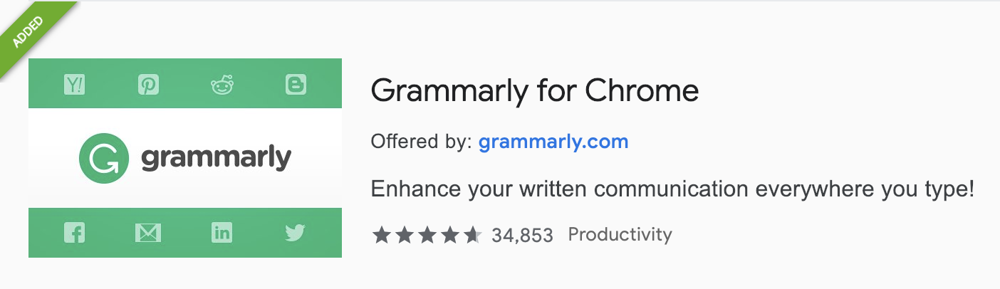
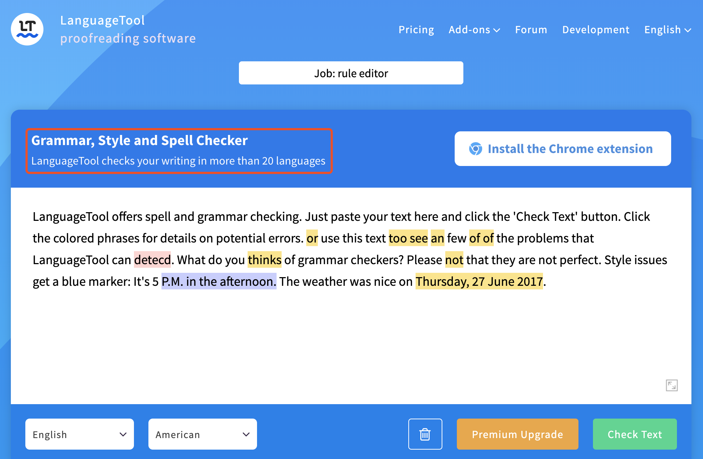
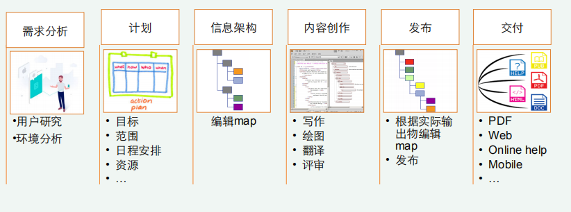
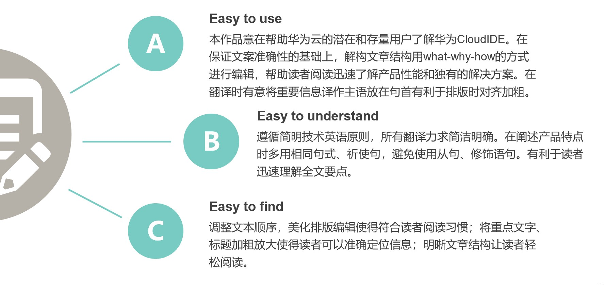
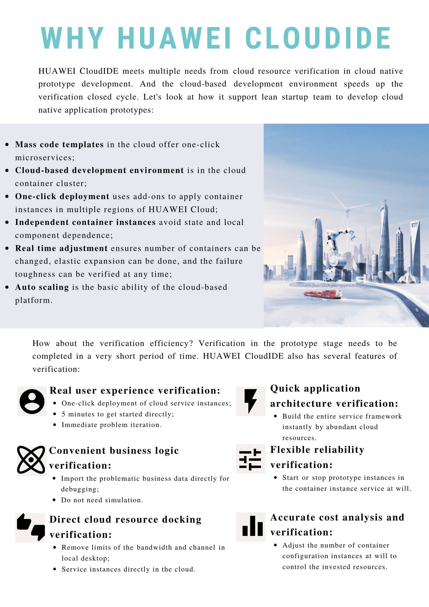
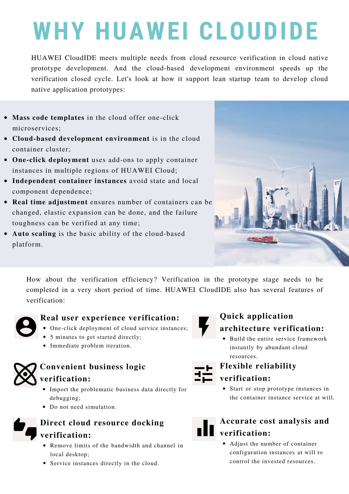

Introduction
The world of man and machine language for better technical communication.
Contributing
Welcome to the world of technical communication. Feel free to add your TC story in this repo. You can start from any one of the following items to help improve this community:
- TC_Technology: Any information about technology.
- TC_Communication: Useful skills about communication.
- TC_Paper: Classical learning resources or study notes of technical communication.
Clone Repo
Fork my repo on GitHub and clone it.
git clone https://github.com/ireneontheway/ireneontheway.github.io
Create a new branch
-
Get your local master up-to-date with upstream/master.
-
Create a new branch based on the master branch.
Commit and push your changes
- Keep your branch in sync with upstream/master
# While on your new branch
git fetch upstream
git rebase upstream/master
- Push your changes to the remote
git push -u origin new-branch-name # "-u" is used to track the remote branch from origin
Create a pull request
- Visit your fork at https://github.com/$user/ireneontheway.github.io (replace
$userobviously). - Click the
Compare & pull requestbutton next to yournew-branch-namebranch.
Directory structure
The directory structure is maintained in the SUMMARY.md file.
After starting mdbook,it will automatically generate directories
and files according to the SUMMARY.md.The commands to start document
preview under each system are as follows:
- Window
bin\win\mdbook serve
- Mac
bin/mac/mdbook serve
- Linux
bin/linux/mdbook serve
- Mac and Linux systems need to give mdbook executable permission：
sudo chmod 755 bin/mac/mdbook
sudo chmod 755 bin/linux/mdbook
Write articles
The document is written under ./src, you can use mdbook to preview.
Mdbook manual is here.
Preview
After executing the above command, you can open
http://localhost:3000/
with your browser to preview articles.
TC_Technology
All about Information technology.
- Database basic knowledge
- What is API
- XML introduction
- ...
基于XML的结构化写作---XML
XML
-
XML 指可扩展标记语言（EXtensible Markup Language）
-
XML 允许创作者定义自己的标签和自己的文档结构
-
XML目的在于存储和传送数据，不过其本身不会执行任何动作。
XML语法
一个XML文件分为如下几部分内容： 1.文档声明 2.元素 3.属性 4.注释 5.CDATA区、特殊字符 6.处理指令（processing instruction）
文档声明
<?xml version="1.0" encoding="utf-8" standalone="yes" ?>
XML声明放在XML文档的第一行 XML声明由以下几个部分组成：
version –文档符合XML1.0规范，我们学习1.0 encoding –文档字符编码，比如”GB2312”或者”UTF-8” standalone –文档定义是否独立使用 standalone=”no”为默认值。yes代表是独立使用，而no代表不是独立使用
元素（标记、节点）
(1)每个XML文档必须有且只有一个根元素
根元素是一个完全包括文档中其他所有元素的元素 根元素的起始标记要放在所有其他元素的起始标记之前 跟元素的结束标记要放在所有其他元素的结束标记之后
(2)XML元素指的是XML文件中出现的标签，一个标签分为开始标签和结束标签，一个标签有如下几种书写方式，例如
包含标签体：
<a>www.sohu.com</a>
不含标签体的：
<a></a>,简写为:<a/>
(3)一个标签中也可以嵌套若干子标签。但所有标签必须合理地嵌套，绝对不允许交叉嵌套，例如
<a>welcome to <b> www.sohu.com </a></b>
(4)对于XML标签中出现的所有空格和换行，XML解析程序都会当做标签内容进行处理。例如下面两段内容的意义是不一样的。
<stu>xiaoming</stu>
<stu>
xiaoming
</stu>
(5)由于在XML中，空格和换行都作为原始内容被处理，所以，在编写XML文件时，要特别注意。
(6)命名规范：一个XML元素可以包含字母、数字以及其它一些可见字符，但必须遵守以下规范：
-
区分大小写，例如，元素P和元素p是两个不同的元素
-
不能以数字或下划线”_”开头
-
元素内不能包含空格
-
名称中间不能包含冒号（:）
-
可以使用中文，但一般不这么用
属性
<student id="100">
<name>Tom</name>
</student>
(1)属性值用双引号（”）或单引号（’）分隔，如果属性值中有单引号，则用双引号分隔；如果有双引号，则用单引号分隔。那么如果属性值中既有单引号还有双引号怎么办？这种要使用实体（转义字符，类似于html中的空格符），XML有5个预定义的实体字符，如下： < >&'"
(2)一个元素可以有多个属性，它的基本格式为：
<元素名 属性名1="属性值1" 属性名2="属性值2">
(3)特定的属性名称在同一个元素标记中只能出现一次 (4)属性值不能包括<,>,&，如果一定要包含，也要使用实体
语法-注释
XML的注释类似于HTML中的注释：
<!--这是一个注释-->
(1)注释内容不要出现-- (2)不要把注释放在标记中间； (3)注释不能嵌套 (4)可以在除标记以外的任何地方放注释
CDATA节
假如有这么一个需求，需要通过XML文件传递一幅图片，怎么做呢？其实我们看到的电脑上的所有文件，本质上都是字符串，不过它们都是特殊的二进制字符串。我们可以通过XML文件将一幅图片的二进制字符串传递过去，然后再解析成一幅图片。那么这个字符串就会包含大量的<,>,&或者“等一些特殊的不合法的字符。这时候解析引擎是会报错的。
所以，有些内容可能不想让解析引擎解析执行，而是当做原始内容处理，用于把整段文本解释为纯字符数据而不是标记。这就要用到CDATA节。
语法如下：
<![CDATA[
......
]]>
CDATA节中可以输入任意字符（除]]>外），但是不能嵌套！
如下例，这种情况它不会报错，而如果不包含在CDATA节中，就会报错：
<stu id="001">
<name>杨过</name>
<sex>男</sex>
<age>20</age>
<intro><![CDATA[ad<<&$^#*k]]></intro>
</stu>
处理指令
处理指令，简称PI（processing instruction）。处理指令用来指示解析引擎如何解析XML文件，看下面一个例子：
比如我们也可以使用css样式表来修饰XML文件，编写my.css如下：
name{
font-size:80px;
font-weight:bold;
color:red;
}
sex{
font-size:60px;
font-weight:bold;
color:blue;
}
sex{
font-size:40px;
font-weight:bold;
color:green;
}
我们在xml文件中使用处理指令引入这个css文件，如下：
<?xml version="1.0" encoding="gb2312"?>
<?xml-stylesheet href="my.css" type="text/css"?>
<class>
<stu id="001">
<name>杨过</name>
<sex>男</sex>
<age>20</age>
</stu>
<stu id="002">
<name>小龙女</name>
<sex>女</sex>
<age>21</age>
</stu>
</class>
候我们再用浏览器打开这个xml文件，会发现浏览器解析出一个带样式的视图，而不再是单纯的目录树了：
但是XML的处理指令不要求掌握，因为用到的很少。
格式正规的XML文档-小结
语法规范：
- XML声明语句
- 必须有一个根元素
- 标记大小写敏感
- 属性值用引号
- 标记成对
- 空标记关闭
- 元素正确嵌套
本文主要内容仅作学习分享。
版权声明：本文部分转自CSDN博主「KLeonard」的原创文章，遵循CC 4.0 BY-SA版权协议，转载请附上原文出处链接及本声明。原文链接
如需转载请注明作者与来源。
数据库基础入门
这篇文章带领一个计算机小白从零开始了解数据库，跟随着文章每一小节的视频和笔记往下浏览，相信看完之后你会对数据库有一个基本的认识。
数据库基础知识（学习笔记）
What is Database & SQL?
-
DBMS (database management system): a collection of programs which enables its users to access database, manipulate data, help in representation of data.
- hierarchical (trees with nodes of records and branches): Windows registry
- network DBMS: RDM server
- most widely used relational DBMS (in forms of tables; not many to many relations): MySQL, Oracle, Microsoft SQL server
- object-oriented relation DBMS (in the form of objects with attributes): PostgreSQL
-
SQL: structured query language used to query a database
What is a distributed database?
- centralized database: data resides in one single location
- distributed database: data resides in several locations
- replication
- fragmentation
RDBMS
store modify extract
store data in forms of tables
field (maintain information) & records (row entry)
SQL statements: select, insert, drop, delete
- advantages:
- convenience: be accessed by many people
- clear & concise
- carry out different complicated commands
- disadvantages
- complicated to implement
- hard process
- slow over response time
What is NoSQL?
NoSQL = not only SQL
-
upcoming DBMS; scale out better
-
non_adherence to RDB concepts
-
distribute DB load on multiple host - scale out
-
no SQL no ACID
CAP
-
consistency
-
availability
-
partition tolerance
CA: SQL Server\ MySQL \ Oracle \ PostgreSQL
AP: Cassandra\ CouchDB \ DynamoDB
CP: MongoDB\ Hbase \ Memcache \ Redis
Raft
-
Solve Byzantine failures
-
Terms
- Leader: accept data from the client; sends data to follower
- Follower
- Client
- Log
-
Vote message
-
Add entries message
-
consensus algorithm: a process used to achieve agreement on a single data value among distributed processes or systems.
-
election and log propagation:
-
2-Phase & 3-Phase
-
leader completeness
-
split vote
-
network partition
-
log compaction
-
membership changes
解决分布式共识问题
- 对多个节点提出的议案作裁决并得到一个一致的结论；
- 让每个节点都感知到最终结论，从而使集群整体状态保持一致；
- 允许一部分节点宕机后集群仍可正常工作，先前通过的议案仍可访问，集群状态仍维持一致；
Raft 算法子问题
-
Leader election：描述如何从集群的几个节点中选举出 Leader；
-
Log Replication：描述如何将日志同步到各个节点从而达成一致；
-
Safety：定义了一组约束条件来保证 Raft 算法的强一致性；
-
Membership changes：描述如何变更集群关系（增加或者减少节点）；
strong leader 的模型

心跳 RPC
leader 会每个心跳间隔至少一次向所有对等方发送一个 AppendEntries RPC，以防止他们开始新的选举。 如果领导者没有新条目要发送到特定对等方，则 AppendEntries RPC 不包含任何条目，并被视为心跳。
几分钟演示 Raft 原理，点击查看： Raft 原理演示
ACID, Isolation Level, MVCC
（1）脏读：指事务读到脏数据，所谓脏数据，指的是不正确的数据，例如事务执行过程中修改了某记录，然后回滚，如果其他事务读到了该记录的中间修改值，则为脏读。
（2）不可重复读：事务在执行过程中，多次对同一个已经存在的记录进行读取，各次读取的值不同。读提交隔离级别存在不可重复读的问题，事务1、2并发执行，事务2首先读取记录1，然后事务1修改记录1并提交，事务2继续读取记录1，则事务2两次读取到的值不同。
（3）幻读：幻读是指使用某个条件读取一批记录时，可能读到的记录数不同。幻读与脏读、不可重复读的区别在于，脏读、不可重复读都是针对某个确定的已经存在的记录出现的值不要求（读到脏数据或多次读的值不同），而幻读则是多次使用同一个条件查询一批记录，多次读到的记录数不同，也就是说，脏读、不可重复读是由于多个事务并行执行update引起的，而幻读则是由于多个事务并行执行insert引起的（并发delete引起的问题看起来算哪个都行……）。
-
原子性：一个事务是一个不可分割的最小工作单元，其操作要么全部成功，要么全部失败；
-
一致性：数据库总是从一个一致性状态转换为另一个一致性状态。所谓一致性状态，就是数据库的所有完整性约束（尤其注意用户定义约束）都被遵守，以银行转账为例，“转账操作必然导致一个账户减少金额，另一个账户增加金额，且这两个账户总金额之和不变”就是一个完整性约束。
-
持久性：一旦事务提交，则其所作的修改就会永久保存到数据库中
-
隔离性：隔离性用于定义事务之间的相互隔离程度，存在四个隔离级别。
-
Read Uncommited：读未提交，其含义为多个并发事务，任何一个事务可以读到其他事务尚未提交的修改：存在脏读、不可重复读、幻读可能性。
-
Read Commited：读已提交，含义为多个并发事务，任何一个事务只可以读到其他事务已经提交的修改：解决脏读，存在不可重复读、幻读可能性。
-
Repeatable Read：可重复读，含义为多个事务并发执行时，任何一个事务反复读取已存在的记录，每次读到的值都是相同的解决脏读、不可重复读，存在幻读可能性。
-
Serializable：串行化，含义为所有事务串行执行，因此不存在事务并发执行的情况。解决脏读、不可重复读、幻读。
-
多版本并发控制MVCC
相当于在读事务开始的时刻点，建立了一个系统的快照，该事务读取的所有数据，均是从快照中读取的，因此满足可重复读的条件，并且可解决幻读的问题，并且也不会读到产生“同样查询条件，事务中第一次读到的记录数大于第二次读到的记录数的问题“（由并发删除引起）
从上可知，使用MVCC后，大部分读都不再需要加读锁，因此读不再阻塞写，写也不再阻塞读。读操作只再受限于系统IO能力。
MVCC provides concurrent access to the database without locking the data. This feature improves the performance of database applications in a multiuser environment. Applications will no longer hang because a read cannot acquire a lock.
MVCC provides each user connected to the database with a "snapshot" of the data to work with. The data is consistent with a point in time. Other users of the database see no changes until the transaction is committed. The snapshot can be taken at the start of a transaction, or at the start of each statement, as determined by the isolation level setting.
其他术语解释
-
分布式数据库
数据库中的数据不存储在同一计算机的存储设备上。
特点：独立透明、集中节点结合、复制透明性、易于扩展性、
-
Plan 执行计划
执行计划（execution plan，也叫查询计划或者解释计划）是数据库执行 SQL 语句的具体步骤
-
mysql-server
表示服务器，服务端；核心程序，生成管理数据库实例，数据库实例任务调度线程之类，并提供相关接口供不同客户端调用。用于持久保存数据并为其提供查询接口（SQL）；可以托管多个数据库并处理这些数据库上的查询。
-
InnoDB
是MySQL的数据库引擎之一，现为MySQL的默认存储引擎,支持了 ACID 兼容的事务（Transaction）功能。
-
subquery sql
一個查詢內的查詢，我們可以用來連接資料表，或在不能使用單一語句來完成的查詢時我們就需要用到子查詢。
本文主要内容仅作学习分享。
如需转载请注明作者与来源。
API 相关的那些事儿
什么是 SDK 和 API、RESTful API
-
API (Application Programming Interface) 应用程序编程接口 --- 买面包
-
RESTful API (Representational State Transfer)：REST 风格的API。URL定位资源，用HTTP动词（GET,POST,DELETE,DETC）描述操作，资源在网络中以某种表现形式进行状态转移
-
SDK (Software Development Kit) 软件开发工具包 --- 面包机和配料
sdk是整个开发工具包，api是sdk里一个一个的给你调用的方法。可以把SDK想象成一个虚拟的程序包，在这个程序包中有一份做好的软件功能，这份程序包几乎是全封闭的，只有一个小小接口可以联通外界，这个接口就是API。API＝SDK上唯一的接口。
SDK和API都是服务的消费者，提供SDK和API的都是服务的提供者。 信息化时代，为了让使用者高效的来使用厂商提供的功能、系统或平台，需要大量的API/SDK对接。
| 优势 | 劣势 | |
|---|---|---|
| API | 开发成本低，对接比较简单，可以快速验证商业模式和用户体验 | 经过对接平台，厂商可以获取对接平台相关数据信息 |
| SDK | 对接后的功能比较稳定，响应速度快，而且对接平台相关数据不会被获取 | 需要开发的环节较多，开发工作量大，对接周期略长 |
在当今的互联网应用的前端展示媒介很丰富。有手机、有平板电脑还有PC以及其他的展示媒介。那么这些前端接收到的用户请求统一由一个后台来处理并返回给不同的前端肯定是最科学和最经济的方式，RESTful API就是一套协议来规范多种形式的前端和同一个后台的交互方式。。资源是 REST 的基础，所有操作通过资源增删改查（POST\DELET\PUT\GET）实现。无状态。
POST/authorization 登录
DELET/authorization 登出
URL命名： /资源名称/{资源ID}/子资源名称/{子资源ID}
-
REST描述的是在网络中client和server的一种交互形式；REST本身不实用，实用的是如何设计 RESTful API（REST风格的网络接口）；
-
Server提供的RESTful API中，URL中只使用名词来指定资源，原则上不使用动词。“资源”是REST架构或者说整个网络处理的核心。
-
用HTTP协议里的动词来实现资源的添加，修改，删除等操作。即通过HTTP动词来实现资源的状态扭转： GET 用来获取资源， POST 用来新建资源（也可以用于更新资源）， PUT 用来更新资源， DELETE 用来删除资源。
-
Server和Client之间传递某资源的一个表现形式，比如用JSON，XML传输文本，或者用JPG，WebP传输图片等。当然还可以压缩HTTP传输时的数据（on-wire data compression）。
-
用 HTTP Status Code传递Server的状态信息。比如最常用的 200 表示成功，500 表示Server内部错误等。
OpenAPI: 是REST API 的 API 描述格式
- 每个端点上的可用端点（/users）和操作（GET /users，POST /users）
- 操作参数每个操作的输入和输出
- 认证方法
- 联系信息，许可证，使用条款和其他信息。
- API规范可以用YAML或JSON编写。该格式对人和机器都很容易学习和阅读。
Swagger: Swagger是一套围绕OpenAPI规范构建的开源工具，可以帮助您设计，构建，编写和使用REST API。
- Swagger编辑器 - 基于浏览器的编辑器，您可以在其中编写OpenAPI规范。
- Swagger UI - 将OpenAPI规范呈现为交互式API文档。
- Swagger Codegen - 根据OpenAPI规范生成服务器存根和客户端库。
设计优先用户：
- 使用Swagger Codegen为您的API生成服务器存根。剩下的唯一事情就是实现服务器逻辑 - 而且你的API已经准备好了！
- 使用Swagger Codegen以超过40种语言为您的API生成客户端库。
- 使用Swagger UI生成交互式API文档，让用户直接在浏览器中尝试API调用。
- 使用该规范将API相关工具连接到您的API。例如，将规范导入到SoapUI来为您的API创建自动化测试。 查看与Swagger集成的开源和商业工具。
本文主要内容仅作学习分享。
如需转载请注明作者与来源。
TC Paper
Classical learning resources of technical communication.
- DQTI (Developing Quality Technical Information)
- DITA Structured Writing
- ASD-STE100 (Simplified Technical English)
Develop quality technical information
DQTI 可以说是技术写作里的圣经宝典之一了，想要成为一名合格的 technical writer 一定要拜读这本大作。今天小编带大家一起阅读本书的前言部分，了解一下究竟什么是有质量的技术信息，这本书该怎么读。
首先假设你刚上手使用一个新产品，在熟悉产品的过程中我们倾向于在用户界面自我探索，而不愿意点击帮助链接，查看帮助文档很容易打断手头的工作。遇到问题首先问身边的同事或者到网上看视频教程，就是不愿意看帮助文档。
为什么会这样呢？习惯使然。
在过去专业技术产品面向技术专家，他们本身就精通该技术，帮助文档对于他们来讲可有可无。而现在，在科技迅猛发展的时代，越来越多新的技术产品将会进入“普通”用户的视野中。可如何让技术能够快速上手，方便易用成了TCer们的使命。
技术写作是一项完完全全以用户为中心的写作岗位，如果你关注一下DQTI这本书重复率最高的词应该就是user了，可见用户就是本书的C位了。
嵌入式协助信息 (embedded assistance)
除了技术产品本身，还要关注产品界面设计、字段消息、标签等等，这里将之统称为嵌入式协助文档（embedded assistance）。和独立帮助文档不同的是它们会和产品使用界面一同展现给用户，让用户自然而然地接受信息引导。以下就是嵌入式协助信息的几个种类：

这是基于ASCII界面的非图形软件文本的嵌入式协助信息：

这是硬件文本的嵌入式协助信息：
渐进式信息披露 (Progressive disclosure of information)
Jakob Nielsen: “Progressive disclosure defers advanced or rarely used features to a secondary screen, making applications easier to learn and less error-prone.”
作者想强调的第二点渐进式信息披露 (Progressive disclosure of information)，指的是所有文档（嵌入式协助信息、帮助链接、文档等等）都必须能够顺畅地展现在用户面前，也就是要设计出连贯的故事感。
Technical Writer 的职能转变
如今技术写作人员除了单纯处理文本，还要关注嵌入式协助信息、渐进信息展示等等方面。这都意味着TW的职能进一步渗透至产品设计、用户界面等流程，TW的工作流程往前进了。
过去的工作流程即瀑布式工作流程 (waterfall development processes)，就是说一个环节任务完成后再移交至下一个环节的负责团队，这使得下游团队很难更改上游团队的工作设计。文档一般最终环节才会交付给TW进行处理，而此时很难更改不合格的内容涉及，这样TW又要在此基础上开发文档。
为了解决这一问题，开发团队开始采用敏捷开发流程(agile development process)，可以跨团队进行迭代开发。这样团队成员能够看到并借鉴相互交付的成功，产品可以说是举全队之力的产出了。敏捷开发正如其名，让产品设计随需求迅速变化。在这种模式的团队中，TW的职能变得非常关键了，从最早期设计阶段、代码书写到最后完成全阶段都要参与。
重新定义高质量技术信息
DQTI 这本书阐述了高质量技术信息有哪些特点。开发高质量技术信息需要了解用户心理、为用户提出建议并对所有形式的文本措辞负责。
作者一直强调文本必须以用户为中心，因为高质量的信息是由用户定义的。如果用户在寻找信息时问题重重就算不得好的技术文档。要知道信息质量会影响用户对于产品质量的感官和整体满意度，同时还会左右他们的购买决策。在整体产品开发过程中，TW要成为用户体验的保障者。
高质量技术信息要能展现用户所想，给予用户所需。以下是作者整理的几大高质量技术信息的特点，全书也是以此为结构一一展开的：

小编语
DQTI的前言导读就到此为止啦，是不是对技术文档的工作有了进一步了解呢？这本TW届的圣经接下来都会围绕“easy to use”、“easy to understand”、“easy to find”进行详细阐述。我会在接下来几天慢慢将此书解构一点点整理出读书笔记，与大家分享。欢迎关注，共同探讨哦 。
本文主要内容来源于《Developing Quality Technical Information》，仅作学习分享。
如需转载请注明作者与来源。
Accuracy: be sure you are right, then go ahead
在"Docs in the Real World"一文中，Carolyn Snyder 和 Jared Spool 提出“信任破坏者”（trust-breakers）,这一概念强调了信息准确度的失误对用户信任的影响：
- 再细小的信息错误也会将用户信用消磨殆尽。
- 影响相关产品的使用。
- 用户未来不会再次尝试使用曾出现错误的文档。
DQTI 一书给出了保证信息正确的相关写作准则：
- 理解并验证文本后进行写作。
- 与时俱进。
- 同一项目信息保持一致。
- 使用准确性自动检验工具。
- 检查相关参考信息的准确性。
理解并验证文本后进行写作
接触新技术新文本时，如果没法马上获得技术专家的指导，可以提前写初稿。写作时要考虑为方便用户理解微调信息。技术专家更适合在已有文本基础上做准确性审校，而不是从头开始技术写作。写作并审校保证发布时信息准确无误。
技术写作人员不需要像开发者那样充分地了解技术产品，因为一旦太过熟知原理就很容易在写作时加入过多信息。不过想要写出最容易被理解的文档，你最好能够作为用户使用产品，越是能熟练上手使用越能保证文档准确度。时间和条件允许的话，以下建议能帮助确保信息准确性：
- 初步制定非正式的文档可用性演练，文档人员参照初稿完成重要的操作任务。
- 观察正式文档可用性演练中，真实用户是如何使用文档及相关产品或工具完成操作任务的。
- 对文档目标用户进行访谈，观察他们如何进行日常操作任务的。
这些方式帮助你了解用户是如何工作的，进而可以写出准确的文档让他们轻松上手。
就算是使用产品、工具、能广泛参与演练的文档写作人员也需要向其他同事获得反馈：
- 技术评审人员需要验证技术信息的正确性。
- 写作团队人员需要审校非技术信息的正确性。
写文档的小章节时你可以非正式地征集反馈意见，也可以到审阅阶段正式征集意见。
与时俱进
过时的技术信息就是不正确的信息。在技术版本不断更新时，前一版本技术文档就会过时了。
发布最新版本文档时，要注意商标、产品名、发行层级、样本信息都得是最新的。避免提及具体产品的版本级别，除非是有具体技术缘由：
- 营销信息突出新版本的特性
- 具体发布版本的限制
如果把官网比作花园，园丁必须及时清理杂草，替换花卉植物才能让花园永葆生机、吸引游人驻足观赏。文档人员也一样需要及时更新技术文档，处理过时或者不正确的信息。产品开发周期中的文档都有可能不断变动，要确保跟进每一个环节的变化。
随着时代发展，帮助文档更多地呈现在互联网上，对信息的及时更新和准确度有了更高的要求，以下是一些小建议：
- 设立日常更新表并严格遵循。
- 在网页表明日期和时间，让用户明确文档的发布时间。
- 在网页上发布更新日程，让用户了解文档的更新时间。
- 在网页中设置反馈渠道，让用户能及时反馈沟通。
本文主要内容来源于《Developing Quality Technical Information》，仅作学习分享。
如需转载请注明作者与来源。
Accuracy 02: be sure you are right, then go ahead
同一项目信息保持一致
准确性问题大多是因为同一项目中某部分更新了而别的部分没有更新。一个项目里多个不同版本的信息让用户搞不明白哪个信息是正确的。面对同一类信息需要重复使用时，可以使用“信息重用”保证信息的一致性。
当重用比较短的信息时，你当然可以使用简单 copy 操作。不过，如果遇到长文字重用，建议你使用 “Single source”. Single source 指的是同一来源，且改变不大的文本，但是交付形式不同。本书中的重用指的就是运用同一来源的信息。你可以设计一个 Topic 然后在不同形式的语境中使用，例如基于 HTML 或者 XML 的信息中心、 基于 Web 的文件、在线帮助或者出版书籍中。下图就详细解释了不同语境的信息重用：
只需在 source text 里更新, 不需要在众多版本中逐个更新。使用 “single source” 的另一好处是，假如你的写作工具支持条件文本（conditional text），你可以加入或排除一定的信息。使用条件文本指定特定情况下使用的特点 source 文本，这样提高了多文本信息重用的弹性。
以下几条规范有助于维持文本一致性：
- 尽可能重用信息
- 避免信息不一致
尽可能重用信息
| 重用场景 | 重用方式 |
|---|---|
| 产品窗口界面元件的帮助文本 | 通过各个产品窗口链接访问帮助文本的单一来源 |
| 产品消息文本，用于展示讯息（印刷或在线信息） | 为产品和书籍编辑提供消息文本的单一来源 |
| 互联网、出版及其他在线格式 | 对线上线下信息采取单一信息来源，不同交付方式 |
| 在线帮助或相关的出版信息 | 为网络浏览器及展示用产品提供技术信息 topic 的单一来源 |
| 出版物、在线或网页形式的样板文本 | 多种书本的格式化工具对样板文本采用单一来源 |
使用单一来源不仅提高信息的准确性还节约了同步类似信息的时间。
避免信息不一致
并非所有信息都能重用。尽可能减少不必要的重复才能降低信息不一致的发生。比如说：
-
某一流程需要用户多次使用同一命令，在写作时考虑在步骤一时仅完整地写一次命令（如：(TRACE SYSTEM INFODBASE NEW DEBUG LOG=YES），接下来重复指令时，可以用 “the TRACE command shown in step 1.” 代替。
-
在网页中写作时，如果需要重复外部网页的信息，可以选择以下方式：
- 解释内容并附上链接。好处是信息变动你无需更新自己的网页，不用为信息不一致负责，但是这样会降低用户使用体验，信息查找不便捷，而且外部网页可能会消失造成死链。
- 将内容拷贝到自己的网页。有利于用户查阅，但是你就得不停同步信息了。
使用准确性自动检验工具
错误一般分语法错误和格式错误，网上可以查找到很多相关的工具进行检查。使用语法检查工具自动检验，可以检查被动语态、重复单词、模糊句段、长句等问题。这里列示一些我个人常用的工具：
-
语法检测工具：
-
Grammarly

-
LanguageTool

-
-
代码检测工具：
-
Code Spell Checker

-
-
专业翻译工具的质检功能
-
Yicat
 可以巧用专业计算机辅助翻译工具术语库的功能，建立属于自己的术语库，但要注意添加术语的准确性。
可以巧用专业计算机辅助翻译工具术语库的功能，建立属于自己的术语库，但要注意添加术语的准确性。
-
检查相关参考信息的准确性
需要关注以下参考信息：
-
参考信息的网址（保证网址能够及时更新）
-
出版物料的参考信息（包括标题、作者、出版商）
使用链接检测工具有利于找出死链及时修改，如github的插件CircleCI:

DQTI 之 Accuracy 总结
保证文本准确性就是建立用户信任的基石。Accuracy 章节讲述了保证信息准确的几个要点：

本文主要内容来源于《Developing Quality Technical Information》，仅作学习分享。
如需转载请注明作者与来源。
Developing Quality Technical Information
在前一期文章中已经介绍了本书的主要框架：
Easy to use
- task orientation
- accuracy
- completeness
Easy to understand
- clarify
- concreteness
- style
Easy to find
- organization
- retrievability
- visual effectiveness
今天就从 easy to use 入手，谈一谈第一个要求 task orientation （以任务为中心）
task orientation
task orientation 指的是写作时注重指导用户如何完成任务。我们的用户一般都有本职工作需要完成，文档的作用是引导实用信息，指导他们如何操作。 TW要站在用户角度理解文档，在写文档之前对目标用户进行分析非常必要。分析出重要任务、常用任务、困难任务，并列出用户试用产品需要的高层次任务。
将高层次任务分解成低层次任务。例如将启动产品改成安装并设置产品。就像这样把问题结构成更低层次的任务，让用户一看就懂。任务型写作把用户拉回到任务上，就如同旅行中的指针为游人指明方向。为了做到这一点，写作时需要遵循以下规范：
Write for the intended audience
Present information from the user’s point of view
Indicate a practical reason for information
Relate details to a task where appropriate
Provide only a necessary amount of conceptual information in task topics
4.Focus on real tasks, not product functions
5.Use headings that reveal the tasks
6.Divide tasks into discrete subtasks
7.Provide clear, step-by-step instructions
Make each step a clear action for users to take.
Group steps for usability
Clearly identify optional steps
Identify criteria at the beginning of conditional steps
接下来我就一一介绍七条规范。
1.Write for the intended audience 为目标读者写作
写作前要明确目标读者，如果是为管理者写作，写作只应该囊括高层次任务，例如评价和计划。如果是为终端用户，就要避免写系统性管理任务。要确定写的是用户关心的问题，写作的信息详细程度取决于用户的类型。
2.Present information from the user’s point of view从用户角度呈现信息
从用户角度呈现信息指的是要将用户拉入你讲述的“故事中”，使得他们能够简单理解你描述的任务，因此写作包含以下特点：
- 一般使用“你”
- 使用主动语态，运用动词应该以用户视角
- 解释操作
以下错误示例的写作角度不够贴近读者：
The system should not be shut down during processing. If such a shutdown occurs, the system should be restarted with the START RECOVER command.
应该改为：
If you shut down the system during processing, you might lose data. Use the START RECOVER command to restart the system and recover any data from the log.
原版本行文语态是被动的，而且动作的发起者以及操作原因皆不明确。而修改后“you might lose data”就解释了此项操作的原因--- 避免丢失数据。
TW具有信息优势，写作时可以预见读者在哪一步骤需要帮助，因此需要对症下药。
3. Indicate a practical reason for information 表现信息的实用性
为读者提供信息只达成了部分写作目标，用户需要实用的信息。他们要了解为什么你要传达这些信息，又如何关联他们的任务。要保证你提供的信息与任务相关需要遵循以下规范：
-
任务信息描述详略得当
task topic 应该让用户明白传达此信息的目的。
-
task topic 中只写入必要的概念信息
- 执行该操作的理由
- 执行该操作的需要（例如前提或软件配置）
- 执行操作的步骤
- 后续操作的信息
不要混淆大量 conceptual 信息与 task 信息。用户只想知道怎么解决这一步操作而不想知道有关的知识。 task topic 中，尽早解释步骤，简述相关概念。
今天就先介绍这三点，下一期文章会继续阐释后面的四条写作规范。
本文主要内容来源于《Developing Quality Technical Information》，仅作学习分享。
如需转载请注明作者与来源。
TC_Paper_DQTI_task_orientation02
今天继续讲一讲 task orientation 的写作规范的其他内容。
4. Focus on real tasks, not product functions
首先是区分 real task（用户任务） 和 artificial task（产品任务），在技术写作过程中会逐渐忘记用户真正需要的任务而着重于产品中不必要的任务上。
用户需要编辑表格，应写成“using the table editor”而不是“editing a table”
从用户执行角度编辑信息，拉近信息与用户的距离。同时要注意不要加入任务以外的信息这样会转移用户的注意力。
5. Use headings that reveal the tasks
标题的作用是告知用户为什么需要这个信息。topic的标题应该能够准确传达大致内容信息。避免使用假标题（pseudo-task），此类标题会误导用户：
- 假标题都是概念和参考类信息，例如：名为“Understanding the file system”的topic可能并不含理解文件系统的具体步骤，只是包含了文件系统的参考信息。此时，换成“The file system”更为合适。
- 假标题会将产品任务代替真实的用户任务，例如：“Using the SpellMaster tool”就隐藏了真实用户任务，应改成“Checking the spelling in a document”.
标题的作用是帮助用户找到信息，好的标题能让用户不看文章就知道哪些会是他们需要的信息。同时，也有利于信息重用。
Register usage → Linking with registers
Administering authorization → Authorizing access to data
The Dial-up function → Dialing up the computer
Session initialization → Initializing a session
Using the Define Font Window → Defining a font
Understanding hardware requirement → Hardware requirement
标题除了“ing”还可以用“How to”或者“Steps for ...(n.)”的形式。要以任务为中心让所有层次的用户都读得懂。
6.Divide tasks into discrete subtasks
确定主要任务后，要将他们分解成具体的子任务，这样可以在步骤层面提供有用的信息。每个任务或者子任务中的步骤应该不超过九步，每个子任务仅包含一个具体且完整的项目。
7.Provide clear, step-by-step instructions
大多数任务由步骤组成。偶有任务仅包含一个步骤可以独立成段，大多数都是一系列任务按顺序排列而成的。在写文档的时候留心是否是因为产品设计过于复杂导致帮助文档繁杂，毕竟越便捷易用的产品，帮助文档越少。
从用户角度组织步骤，思考任务如何相互联系?何时分解步骤？一个步骤中应该包含什么？等等问题。以下规范能帮你一步步写出简明的文档：
-
每个步骤向用户提出一个清晰的操作任务
一个完整的步骤包含操作指示。例如：
3.Click OK.
4.The installation begins.
5.After installation completes, restart your system.
此里中 3 与 4 可以合并，这是因为 4 是 3 的结果。为保证每一步骤都有明确指示，建议在句首使用祈使动词（如“Type the date in the first column of the table.” ）或者先定位用户（如“In the first column of the table, type the date.“）
-
根据可用性将步骤分组
分组有利于用户在解决具体问题时快速定位，如果用户要不断根据指示点击用不了多久就头脑麻木了。
To add a setting to your profile:
1.Determine the name of the profile file that you want to add the setting to:
a. Right-click the profile object that you want and select Properties from
the menu.
b. In the Properties window, find the name and path of the profile file.
2.Update the profile file with the new setting:
a. Open your profile file in a text editor.
b. Add the setting to your profile file in the settings section.
c. Save the profile file.
3.Run the profile command with the -file YourProfileName option.
以上例句就是一个很好的分组案例，向用户表明步骤间的逻辑关系，表明了每个步骤对整体任务的作用，也能简化操作步骤。无序列表为用户提供同时可选的项目。
-
清晰指明可选步骤
用户即使跳过可选步骤也能完成任务，因此要清晰指明节省阅读时间。在最开头添上”Optional:“, 不需要在后续文本中写上 “If you want to” or “You can” ，这样就显得多余了。
-
在条件步骤之前指明操作准则
条件步骤是在特定准则下用户才能遵循的，因此一般以 “If,” as in, “If you run test cases in batch mode, complete the fields on the Batch page.”开头。指明这一点，让不需要的用户直接跳过。用户一般不会提前阅读接下去的步骤，因此要在一开始就指明接下来提供哪些信息作用于哪些场景。
以上就是 Task orientation 的主要内容， DQTI 这本书还在章节末整理了主要的写作规范供各位参考：
本文主要内容来源于《Developing Quality Technical Information》，仅作学习分享。
如需转载请注明作者与来源。
Completeness 完整性
A successful book is not made of what is in it, but what is left out of it. ——Mark Twain
对用户而言，保证技术文档的完整性指的是能够获取所有所需信息。首先需要了解用户，了解信息的写作是出于什么目的。比如说，用户需要完成特定的任务吗？需要学习相关概念吗？需要通过信息做决策吗？文档人容易写得太多，把所有东西都塞在一个主题里，其实我们需要一个统一信息的导航。
文档人需要采用极简主义来写作，大刀阔斧地精简技术信息，只留精华部分。这样，用户在了解基本概念之后可以自己轻松探索产品。文档的完整性和其他质量特点类似，特别是task orientation, organization, retrievability，文档的完整性也和视觉特效的特点类似。文档人通常是需要用图来解释技术概念的。此外，建议采用实用性测试来帮助自己了解那里缺少信息，哪里信息冗余。以下是一些规范指南：
- 只涵盖支持用户任务的所有 topic
- 每个 topic 都要概括尽多的用户所需信息
- 使用信息模块保障合适的覆盖率
- 只有用户非常需要时才重复信息
接下来我们一一来分析。
只涵盖支持用户任务的所有 topic
技术信息的目标用户需要知道如何使用产品完成自己的工作任务。建议结合 task orientation 的质量信息特点，了解用户和其任务之后才能选择相关 topic。
最小的 task topic 是对主要任务、子任务的描述、操作场景和原因、如何应对可能出现的错误。在你的写作项目早期就应该进行任务分析，了解用户会做的子任务、任务都有哪些。在之后，你可以使用任务分析结果评估写作的信息是否包括以下必须的 topic:
- 是否包含所有大型用户任务？
- 是否描述了用户完成大型任务中涵盖的子任务
- 是否解释了相关可选任务的原因和场景应用
- 是否描述可能出现的错误
如果以上问题回答“是”，那么你应该涵盖了所有能满足用户需求的 topic。
无论作者对产品如何熟悉，写文档时都容易想当然。因此一定要做完整的任务分析，而不是主观臆断。
同时，在解释概念的时候，比方说引入一个事务、解释一段流程或者强调一个优势，不要混淆信息概念和产品内部资料。概念是在宏观背景下向用户展示某一方面，或者是解释必要的术语，用户通过学习必要的概念来了解所需的信息。打个比方，文件夹就是文字处理程序中的一个概念，但该程序是在内部如何呈现和操作文件夹的就不该告诉用户了。要时刻谨记，与用户任务无关的信息都不应该写进文档。
每个 topic 都要概括尽多的用户所需信息
这个指南要关注两点“尽多”和“所需”，这就是讲究如何详略得当的问题了。核心任务就是了解用户。你要了解新老用户在使用产品时的体验，这会帮助你决定哪些信息是相关的，哪些是不相关的。当用户差不多都是一类人群时，写文档试试最方便的。一方面，假如说是为全新的产品写文档，可以假定用户都是出于好奇心来关注这个产品。另一方面，如果是为早就在市面上的产品写文档，就可以假定用户都是老手了。
但我们常常遇到的问题是，用户不尽相同。既不想让老用户看到老生常谈的介绍信息，又不想让新用户难以上手。
因此需要区别对待，如果用户对文档熟悉程度不同，就需要想办法满足不同的信息需求了。以下是一些建议：
- 建立独立的 concepts、task、reference 的 topic。将任务 topic 和 concept、reference 的 topic 链接起来。
- 为老用户提供线上线下的信息，为新用户额外提供入门的在线指南。
- 提供两个版本的信息格式，比如说为老用户提供 advanced topic，为新用户提供教程。
- 将信息整合在一个在线信息系统里或者印刷文件中，但在 advanced topic 中剔除引入性 topic。
- 将信息整合在一起，但是使用图形进行区分。
熟悉用户之后，还是要牢记我们写入的内容要遵顼以下两点：
-
尽多：提供足够多的信息
-
可能的信息
普遍和少见的情况都要提及。特别是要提供少见场景下的特殊信息。比如说，某种操作失败的情况应如何处理等等。
-
流程
写指南的时候要跟随流程的所有路径以用户视角走一遍。流程中的决策点越多指南的作用越大。
-
链接和交叉引用
提示用户其他参考信息的时候，要问问自己用户需亚奥知道什么。不要仅仅给出标题。比如说不要写 “For more information, see InfoDBase User’s Guide,” 应该换成 “For information about indexing in InfoDBase, see InfoDBase User’s Guide.” 。不要让用户只有点击链接才能了解里面的内容。同时要注意如果使用超文本链接需要选择完整的链接文本。
描述交叉引用也能帮助在以后更新版本时验证其正确性。
-
程序语法
记录命令、调用、语句或宏的语法时，询问程序员到底需要展示多少细节。
-
-
所需
- 过多冗余的细节会降低效率，用户会更难寻得需要的信息。John Carroll 在他的书 The Nurnberg Funnel: Designing Minimalist Instruction for Practical Computer Skill* 提到：
极简的方法是指读者花最少的精力就能获取需要的信息。
- 许多引入性 topic 的信息超出了用户所需。问问自己信息有第二阶梯读者吗。如果有，他们和主要读者的差别在哪里，对于他们现有信息是多了还是少了。
本文主要内容来源于《Developing Quality Technical Information》，仅作学习分享。
如需转载请注明作者与来源。
DITA
what you see is not what you get; what you see is only one option.
DITA的首字母D是达尔文的第一个字母，与进化论作者名字相同，是DITA标准设计者可以选择的最贴切的名字。DITA在实施过程中，信息架构的构建规则和内容策略需要不断演化与进化，优质可重用内容的形成需要经历自然选择和淘汰过程。
DITA信息开发流程

结构化写作特点：
-
模块化
-
内容与样式分离
-
元数据
-
多格式发布
-
内容重用
DITA的特点：
- 应用领域广
- 融合信息开发理念
- 信息架构可进化
- 重用灵活
- 兼容性强
DITA成熟度模型
### 模型概要
-
Level 1: Topics 在最基本的层次上，DITA是一种XML文档标记语言。但即使在最简单的层次上，DITA仍会强制执行主题结构和重用体系结构，以允许DITA文档重用其他结构化项目中的内容。这种标准化还为其他人重新使用主题级别奠定了基础，因为面向文档的内容的初始迁移逐渐发展为结合了围绕主题和地图的更好的管理和创作实践。
-
Level 2: Scalable Reuse 面向主题的创作可围绕受众的主要使用单位（针对大多数模块化内容的最安全，可扩展性最高的重用策略）组织可重复使用的内容。可以通过使用DITA映射对外部的更高级结构（例如章节甚至Web页面）进行编码，针对不同的媒体和主题的不同变体（例如产品变体的文档）重复使用，重新组合和组织相同的主题。构成可交付成果的主题。
-
Level 3: Specialization and Customization 通过专业化，DITA可以为信息键入策略提供结构性支持，从而改善创作一致性并指导质量改进。专业化还可以针对特定主题或可交付成果的类型对内容进行更紧密的建模，语义搜索和定制过程可以利用这些内容
-
Level 4: Automation and integration 内容专业化之后，您就可以利用对关键过程的自动化来进行语义投资，并开始将内容捆绑在一起-甚至跨不同的专业或创作学科。例如，您可以在市场营销和培训中共享通用内容，或者在整个内容生命周期中共享通用流程和基础架构。
-
Level 5: Semantics on demand 随着DITA多样化以在组织中占据更多角色，单一应用程序解决方案不再能够提供每个作者或产品可能需要的专业支持。相反，共享DITA作为通用语义货币的跨应用程序，跨仓库的策略使组可以使用最适合其内容创作和管理需求的工具集，同时在整个内容生命周期中共享内容甚至在组之间转移创作责任。除了已知流程的自动化之外，我们现在还可以灵活地根据需要组合新的应用程序和内容源，从而提供处理灵活性和适应性强的渐进式内容策略。
-
Level 6: Universal semantic ecosystem 随着DITA在内容孤岛和应用程序之间提供可扩展的语义带宽，出现了一种新型的语义生态系统：可以随内容跨旧边界移动，包装非结构化内容并提供与半结构内容和托管数据源的经过验证的集成的语义。 DITA成为跨组织，跨标准，通用内容使用的语义交换标准
DITA 成熟度模型帮助企业顺利部署DITA
DITA成熟度模型可以应对DITA的采用挑战。 DITA成熟度模型不是采用全有或全无的方法，而是假设公司将采用渐进的逐步方法，一次吃掉一口DITA大象。
除了经过验证的模式和最佳实践之外，DITA成熟度模型还可以帮助每个公司为其DITA计划找到合适的切入点，而不管其DITA能力是否强大。因此，DITA成熟度模型非常灵活，可以适应每个组织的个人情况和目标。
DITA成熟度模型还有助于衡量模型的六个级别的成功程度。特定的里程碑可帮助组织了解它们在每个级别中的位置，从而在他们努力实现DITA的最大有效性和效率时提供对进度的整体，上下文的了解。
尽管引入了组织上的巨变，但DITA仍然是提高XML内容价值的巨大机会。 DITA成熟度模型可以帮助任何公司驾驭DITA水域，无论是计划深入到深端还是只是将脚趾浸入浅端。
基本术语
建筑图纸 -> DITA标准
房子 -> map
DITA map，用于组织topic的DITA文件
房间 -> topic
DITA topic,DITA topic是构建内容的基本模块，不同类型的内容用不同的载体（topic类型）
窗户、门 -> 内容组件element
DITA元素类型的XML元素，其@class属性值必须是符合DITA规范或符合专门化层级的元素名
对组件的描述 -> 属性attribute
描述元素属性的元数据，用@表示
其他
DITA文件
符合DITA规范的XML文件，根元素必须为
元数据（metadata）
提供有关信息的信息，可以是属性或元素
DITA专门化（specialization）
对现有的DITA架构（topic，元素和属性）进行扩展，使之更加适合内容需求，DITA专门化是DITA定制的一种形式.
整体框架
Base architecture
• 作者不需要更详细的信息分类
• 开发者创建轻量级的DITA应用
• 开发者基于topic作专门化
如：菜谱、数据表
Technical Content
• 技术传播者创作面向任务的信息，需要多种信息类型
• 商业分析师记录过程和流程
• 创作书本
如：用户手册、维修手册、在线帮助、厂商的知识库等
Learning and training
• 制作公司内部或商业培训材料
• 教师制作课件
• 在线培训
LwDITA

轻量级DITA不单纯基于XML的结构化写作。
详情Lightweight DITA: A pre/overview, Michael Priestley。
参考信息(待更新)
-
http://docs.oasis-open.org
本文主要内容来源于本文内容部分引用自 TC互联，仅作学习分享。
如需转载请注明作者与来源。
DITA知识学习
介绍
DITA是一种基于XML的，与工具无关的创建，组织和管理内容的方法。
在DITA 中，topic由 map来组织，map更像是一个目录。
<title>This is a title</title>
DITA标签的名称取决于您创建话题的类型，例如< concept >, < task >, or < reference >。
结构化写作是一种自定义信息组合方式的工作流程。DITA中定义的元素有特殊关系和层级，也定义哪些元素前后联结以及特定元素的数量。其他结构化写作标准：DocBook, S1000D, NLM。
（样例）
- 基于topic的写作
- 将内容与格式分离
- 极简主义
- 结构化写作概念
Topic
DITA的Topic是最基本的写作和重用单位，Topic由map组织，如同目录，map能够引导您了解Topic的层级和顺序。
| concept(glossentry)--What\Why | Task（Strict&General）--How | Reference | |
|---|---|---|---|
| 作用 | 为什么要执行这个任务？执行任务前需要理解那些概念？（是什么意思） | 如何执行任务 | 执行任务时可能需要的参考信息 |
| 示例一 | 鸭的行为 | 如何观察鸭 | 鸭的品种 |
| 示例二 | 油画的特点 | 怎样画油画 | 油画名家列表 |
| 示例三 | 洗衣机操作面板 | 如何洗大件衣物？故障处理 | 错误代码参考 |
一个topic应该表述一个想法或回答一个问题。
topic应该包含足够的信息来独立存在。
topic不应假设任何上下文。
单个文件应仅包含单个topic。
基础性结构
<topic id="sample">
<title>Topic title goes here</title>
<shortdesc>A short description</shortdesc>
<body>
(Most of the elements go here.)
</body>
</topic>
- < shortdesc >（简短描述）元素通常用2-3句总结来描述topic内容。
- < title >是topic中唯一必需的元素。
- < body >包含topic的大部分信息。在特定topic类型中，body元素具有相关名称，例如对于概念的< conbody >和对于任务的< taskbody >。
常见元素
- < conbody > (Concept Topic的正文)
- < p > (一个段落)
- < ul > (一个无序列表或者项目符号列表)
- < ol > (一个有序列表或者编号列表)
- < li > (内嵌于< ul > 或< ol >里的一个列表项)
- < fig >(图片，包含一个可选标题)
- < image > (Figure里的图片或文本行间的图片)
- < section > (Topic的一部分，带有可选标题)
Task Topic
Task Topic回答“怎么做？”的问题，它包括完成过程的分步说明。DITA还允许包括步骤结果、图形、注释和一级子步骤。
- 严格任务：要求所有元素以特定顺序出现，适用于需要分步说明的项目。
- 一般任务：在元素排列的顺序上更为灵活，对过程概述很有用。
Strict Task 常见元素
-
< taskbody > （Task的正文）
-
< step >（步骤列序）
-
< cmd >（用户采取的动作，是step必需元素）
-
< info >（关于步骤的附加信息）
-
< stepresult >（执行操作后会发生什么）
-
< stepxmp >（举例说明如何做这个步骤）
-
-
< example >（举例说明如何做整个Task）
Reference Topic
Reference类型的Topic回答“是什么？”的问题。Reference类型的Topic通常包含描述性事实，例如命令或API函数调用的语法，以表格的形式列出设备的操作特性和容限范围，或识别软件屏幕上的信息项。
Reference Topic 常见元素
- < refbody >（Reference正文）
- < section >（Reference的一部分，带有可选标题）
- < table > （表格）
- < fig >(图片，包含一个可选标题)
- < properties >（属性列表）
- < refsyn >（语法图）
Glossary Entry Topic
Glossary Entry类型的Topic回答“这个单词或短语是什么意思？”的问题。Glossary Topic通常包含一个术语，以及一个或多个定义。
Glossary Topic 常见元素
- < glossentry >（glossary entry topic类型）
- < glossterm >（单词或词组）
- < glossdef >（词汇表术语定义）
专门化
- 创建新元素，使其含有特定的顺序和特定的信息
- 创建新属性，使其来识别特定信息
- 创建与作者更加有关联的元素名称
元数据
元数据 提供有关信息的信息。例如，文字处理应用程序通常具有文档属性，它告诉你创建文件的人员和上次修改的日期。文档属性中的作者和修改日期不显示为文本信息。文档属性是关于文档本身的元数据。
带有ID属性的Topic示例
<Topic id="xyz">
<Titlr>Title here</Title>
<body>
...
</body>元素
</Topic>
一般规则而言，读者不会看到元数据；他们会在搜索内容时过滤出元数据信息或用到元数据。
元数据可以分配在DITA内容中几个不同的位置：
- 在topic层面：DITA提供了一个< prolog >元素，其中存储整个topic的元数据
- 在元素层面：通常使用元素中的属性来指定元数据。
- 在map文件层面（map文件允许你集合多个topic以创建文档，帮助系统等；稍后的模块将更详细地解释map文件：以在引用topic的< topicref >元素中指定元数据。
<topic id="xyz">
<title>Metadata example</title>
<prolog>
<author>Sarah O’Keefe, Scriptorium</author>
<critdates>
<created date="2015-05-01"/>
</critdates>
</prolog>
<body>
<p>Body content goes here</p>
</body>
</topic>
创建DITA内容
DITA文件是XML，XML是纯文本。因此，可以在任何文本编辑器里创建一个XML文件。
- 一个基本的DITA Topic需要
- 一个XML声明
- 一个DOCTYPE 声明
- 一个topic
- 一个topic id属性
- 一个标题
<?xml version="1.0" encoding="UTF-8"?>
<!DOCTYPE topic PUBLIC "-//OASIS//DTD DITA Topic//EN" "topic.dtd">
<topic id="myfirsttopic">
<title>Hello world</title>
</topic>
以上是一个最小有效的Topic.
?xml version="1.0" encoding="UTF-8"?>
<!DOCTYPE topic PUBLIC "-//OASIS//DTD DITA Topic//EN" "topic.dtd">
<topic id="myfirsttopic">
<title>Hello world</title>
<body>
<p>Here is a paragraph</p>
<ul>
<li>bulleted lists are nice</li>
<li>especially if you have at least two items</li>
</ul>
<note>And don't forget the notes.</note>
</body>
</topic>
以上是含有主题内容的Topic。
用Oxygen Author创建一个Topic
注意、小心与警告
< note>元素用来创建注意、小心、警告和其他警告事项。
DITA为type属性定义了一些值：
- note（默认）
- attention
- danger
- caution
- important
- tip
<note type="warning">
不要给鸭子喂面包。面包不是一种健康的天然食品。
最好喂它们葡萄和玉米碎粒。
</note>
符号和编号列表
DITA中使用的最常用列表是无序（“符号”）列表（< ul >）和有序（“编号”）列表（< ol >）。
有序和无序列表都包含一个或多个列表项元素（< li >）。这些示例中所显示的
DITA还定义了一个简单列表元素（< sl >），一种每个列表项中只包含几个词的列表。简单列表中的列表项使用< sli >元素。
块元素和内联元素
块元素 是一个段落级的元素，比如 p 标记（段落）， li （列表项）, 或者 codeblock （软件代码）。一般来说，块元素在页面上与其前后的信息中垂直分离。因此，如果在一行中有两个 p 标记，则在呈现信息时，它们以换行符分隔。注意，在XML中输入任何换行符都是无效的。
<p>This is a paragraph. </p><p>A second paragraph. </p>
内联元素 是一个在段落中提供标记的元素，比如< tm >（商标），< i >（斜体）, < xref >（交叉引用）, 或者 < term > （术语）。默认情况下，内联元素不会导致内容换行。
<p>An inline element <i>does not</i> result in line breaks. </p>
<p>The line breaks in the XML are
<i>irrelevant</i>
to the output formatting.</p>
其他内联元素，例如以不同方式处理的< fn >（脚注）和< indexterm >（索引条目）。例如，处理< indexterm >条目以创建书籍后页的索引。< indexterm >的文本内容通常不会出现在内联元素出现的位置。
表格
DITA包含两种类型的表格：
-
简单表格
< simpletable >元素支持基础表格的呈现形式，可定制性不强。
-
表格
< table >元素支持复杂的表格类型，可以跨行跨列，能根据属性的设定精确地呈现。
另外还有两个非常独特的表格类型（基于< simpletable >元素）：
- < Properties >，用在Reference Topic中，用于定义属性列表。
- < Choicetable >，用在Task Topic中，用于显示各种选择之间的差异。
简单表元素
| 元素 | 描述 | number |
|---|---|---|
| < sthead > | 标题行 | 最多只能有一个标题行。 |
| < strow > | 正文行 | 必须至少有一个正文行，但该表可以包含许多行。 |
| < stentry > | 一个简单表项 | 每行可以包含一个或多个 |
CALS 表（< table >）
| 元素 | 描述 | number |
|---|---|---|
| < title> | 包含表的标题 | 零或一。 |
| < tgroup> | 包含列参数，标题行和正文行 | 每个表必须至少包含一个< tgroup >元素。 |
| < colspec> | 定义列的宽度和标识信息 | 表格中每列应该有一个< colspec >元素。 |
| < thead> | 包含表标题行 | < tgroup >最多可以包含一个< thead >元素。 |
| < tbody> | 包含表正文行 | 一个< tgroup >有且只含有一个< tbody >元素。 |
| < row> | 包含表中的一行 | < thead >或< tbody >元素可以包含任意数量的< row >元素。 |
| < entry> | 包含表单元格的数据。可以包含文本数据或其他公共块和内联元素 | 一个< row >元素可以包含一个或多个< entry >元素。 |
最佳实践
- 在表格中，总是将< entry >中的内容包裹在< p >标签内，否则表格中的内容可能会变成意想不到的格式。
- 虽然DITA标准本身允许嵌套表格，但这并不是一个好主意。
- 在组织表格内容时，尽可能让表格包含更多行，而不是更多列。在输出内容时，分页问题可能会将多列展示成意想不到的样子。
- 在许多文字处理工具中，人们使用隐形表格来直观地呈现内容，比如缩进列表。在DITA里千万不能这么做，否则会导致意外的结果。
- 要考虑表格里的内容被本地化后是否放得下。如果可以的话，设计内容时，要考虑预留可增加到40％的文本扩展空间。
- DITA标准允许图形存在于单元格里。但是，在大多数情况下，最好将这些图形限制为单元格中的小图标。
- 创建表格时要考虑到输出样式。在小屏幕上呈现表格，不同设备所呈现出的表格差异很大（并且难以阅读），例如移动设备。
- 在某些情况下，您可能需要考虑使用其他元素，例如定义列表，可以作为表或词汇表样式列出，具体取决于目标输出。
创建Topic之间的关联
有多种不同的方式可以用来创建主题topic之间的关联：
- Map文件
- Conref
- 交叉引用
- 相关链接
- 关系表
Map文件
Map文件用于根据输出的需要来组织内容结构。它们就像一个目录：在各种topic之间创建序列和层次结构。通常来讲，不要将所有可用的topic添加到map文件中——只用添加需要交付输出的topic。
Map文件主要由以下组件组成：
- topicref元素，提供特定主题的链接。
- mapref元素，提供另一个map的链接。
举例：
<map>
<title>我的第一个map文件</title>
<topicref href="ducks.dita">
<topicref href="range.dita"/>
<topicref href="size.dita"/>
<topicref href="nests.dita"/>
</topicref>
</map>
第一个topicref（ducks）包含了其他三个文件。Range.dita，size.dita和nests.dita 三个topic都从属于ducks.dita主题。
引用map的话，要用mapref来引用，而不是用topicref来引用。如果你想使用鸭子map内容作为另一个map的组件，你可以将它插入父map，如下所示：
<topicref href="fish.dita">
<topicref href="shorebirds.dita">
<mapref href="ducks.ditamap" format="ditamap"/>
转换map文件格式
大多数内容不使用DITA文件交付。取而代之，是将样式表应用于DITA文件以创建HTML，PDF或其他格式。这个过程称之为 转换。
DITA Open Toolkit是一个样式表集合，主要是用可扩展样式语言（XSL）编写的，为了更好的输出提供基础。用未修改的DITA Open Toolkit转换出来的默认结果显然是没有吸引力的。通常都会进行优化，以用于生产环境的内容转换和输出。
可以使用同一map文件进行转换获得两种不同的输出：一个是PDF文件，另一个是在线帮助系统。
交叉引用
交叉引用让你可以创建各种链接：从文本到文本中的其他位置，从文本到图形，从文本到表格，或从文本到网站
所有交叉引用使用< xref >元素。href属性指定交叉引用的目标。
还可以使用< xref >元素链接到DITA主题之外的资源。对于外部引用，需要设定一个值为external的scope属性和format属性，如下所示：
<xref href="http://www.learningdita.cn" scope="external" format="html"/>
在topic末尾，你可以插入相关链接元素（related-links）。使用关联链来接指向读者可能需要获取的额外信息。
相关链接包含一个链接和链接文本。请参见以下示例：
<topic id="sample">
<title>Sample title</title>
<body>
...
</body>
<related-links>
<link href="http://www.example.com" format="html" scope="external">
<linktext>Sample link</linktext>
</link>
</related-links>
</topic>
在link元素中，要指定目标（使用href属性）、格式和范围。对于网页链接和当前map文件之外的任何其他链接，必须指定范围scope =”external”。
注： 在map文件里，要避免直接用链接来关联不同的topic。它们受到与内联交叉引用相同的限制——链接可能会被断开。请改用关系表
关系表
关系表或reltable用来描述非顺序或非层次化的topic关系。Reltable是map文件的一部分，它可以出现在map中的任何位置，但一般是在主map的末尾添加reltable时用到。关系表的每一行包含链接到相关主题的topicref元素。
Reltable对关系的解析通常是 不会 显示在写作主题里的。
通过conref重复使用内容
在DITA中，可以通过conref重复使用内容。这些内容可能是警告信息（注意、小心和警告）或标准文本（例如公司地址）等。
如果你熟悉其它写作工具，可以把conref当作：
- Flare片段
- RoboHelp嵌入式主题
- FrameMaker文本插入和变量
- HTML服务器端引用
假设在名为location.dita的Topic中有以下注释：
<topic id="topicid">
...
<note id="whatduckslike">鸭子更偏爱湖，而不是沙漠。</note>
...
</topic>
要在另一个主题中重复使用该注释，conref代码如下：
<note conref="location.dita#topicid/whatduckslike"/>
注： 目标元素必须与包含conref属性的元素具有相同的元素类型。比如你只能从一个 < note >元素conref到另一个 < note >元素；你也可以从一个< li >元素conref到另一个< li >元素，等等。
本文主要内容来源于本文内容部分引用自 TC互联，仅作学习分享。
如需转载请注明作者与来源。
DITA Map | Lesson 1: 创建一个map
ditamap 文件的定义和目的
- 联结 topic
- 导航的基础、联结内容
- 决定交付物展现的 topic
- 为满足用户需求，为工作流中一系列 topic 设定导航
- 在 topic 之间创建联系
Map 可以用来编辑、组织和定义 DITA topic 之间的关系。一个 map可以包含如下内容：
- 关于某个产品信息的所有 concept 和 reference 类型 topic
- 为该产品提供使用说明的所有 task 类型 topic
- 一个相关术语的词汇表
创建一个新的 DITA Map
Map 可以包含元数据，例如产品信息、版权和出版日期。Map 中的元数据可用来帮助你的公司更有效地管理和分发你的内容，或帮助你的顾客更轻松地找到所需内容。
一个 map 至少要包含一个根<map>（root <map>）元素。<map>元素可以包含以下元素：
<title>元素，允许你为 map 命名（例如“某产品的用户指南”）。<title>元素中的文本也可以用作输出文档的标题。- 任意数量的
<topicref>元素，允许你在 map 中引用 topic。一个<topicref>元素可以包含其它<topicref>元素。 - 任意数量的
<mapref>元素，允许你在主 map 中引用其它 map。 - 任意数量的
<reltable>元素，允许你定义内容之间的关系。
示例：
向一个 map 添加 topic 引用
<topicref>元素结构如下：
`<topicref href="filepath/filename.dita">`
href 属性包含一个链接，该链接指向 map 中某个 topic。DITA 规定，map 中<topicref>元素指向的 topic 位置不能高于 map 本身，否则会导致某些输出类型报错。因此，map 最好存储在最高一层。
<topicref>元素可能包含以下元素：
<topicmeta>元素，定义关于被引用 topic 的元数据。- 任意数量的
<topicref>元素。 - 任意数量的
<mapref>元素。
在嵌套<topicref>元素时，重要的一点是始终记得你的最终输出。DITA结构并不限制嵌套的<topicref>元素的数量限制，map中<topicref>元素可以包含任意数量的<topicref>元素。但是，每个被嵌套的<topicref>元素通常对应发布输出中的一个新的标题级别。所以，普遍认可的最好做法是，避免五层以上的<topicref>元素嵌套（最理想的是不超过二或三层）。

向一个 map 添加 map 引用
<map>元素结构如下：
`<mapref href="filepath/filename.ditamap" format="ditamap">`
href 属性包含了指向你的主 map 中引用到另一 map 的链接。format 属性明确了你正在链接到一个 DITA map。
<mapref>元素只能包含<topicmeta>、<data>和<data-about>元数据元素。按照 DITA 规定，不能在一个<mapref>元素中嵌套<topicref>或<mapref>元素。
就像<topicref>元素允许你在多个 map 中重用一个 topic 一样，<mapref>元素允许你重用很多 topic。通过一次性建立一个 map 并在其他 map 中引用该 map，你可以节约时间和精力，无需反复创建 map 中相同的系列，或具有相同层级结构的<topicref>元素。
除了重用，<mapref>元素为你提供了额外的内容发布灵活性。你可以在一个大的 map 中组合相关 map，这样你就可以为整个产品家族迅速交付所有内容。你还可以使用<mapref>元素来为 map 添加词汇表。

本文内容引自 TC互联，仅作学习分享。
如需转载请注明作者与来源。
简明英文写作之 ASD-STE100 的写作规则有哪些
Rules for Writers:------ George Orwell
- Never use a metaphor, simile, or other figure of speech which you are used to seeing in print.
- Never use a long word where a short one will do.
- If it is possible to cut a word out, always cut it out.
- Never use the passive where you can use the active.
- Never use a foreign phrase, a scientific word, or a jargon word if you can think of an everyday English equivalent.
- Break any of these rules sooner than say anything outright barbarous.
谈到英文写作，不得不谈一谈乔治·奥威尔著名的写作准则，六句话点明了简明英语写作的核心。而今天要介绍的 ASD-STE100 简化技术英语（STE）首页就附上了这六条经典准则。
STE 是一项国际性的航空航天标准，有助于技术文档 的明确性，让读者容易理解。STE源自航空航天和国防，为许多航空和国防项目所必备。如今，STE越来越多地应用于汽车、机械、电子电信和医疗设备等技术领域，用于降低翻译成本，提高翻译质量。
STE包括：
- 53条书写规则
- 针对公司专有术语的指南（名词和形容词为“技术名称” (“technical names”)）
- 一般词 (general vocabulary) （约900个批准词，以及大量STE中未批准的常用词）
今天我们就着重了解 STE 的书写规则，熟悉并掌握它们有利于提升技术写作水平。
1.Words
- 使用本规范表内的单词、技术术语、技术动词、形容词...
- 只使用表内单词所定义的解释
- 只使用表内单词所定义的解释
- 不要混淆技术动词和的呼吁
- 不使用行话或俗语
- 使用美式英语拼写
2.Noun clusters
-
名词词组不得超过三个名词
-
技术术语大于三个单词显示一次后，下文进行缩写
-
适当在名词前添加定冠词（the,a,an）或者指示形容词（this,these）
3.Verbs
- 只使用以下时态：不定式、祈使句（命令）、一般过去时、一般现在时、过去分词（只作形容词）、将来时
- 助动词不得作为复合动词结构
- "ing"形式的动词只能作为技术术语修饰词
- 书写流程时只使用主动语态，描述性写作时尽可能多使用主动语态
- 使用本规范表内动词描述动作（不使用名词或其他成分）
4.Sentences
- 书写简明的短句
- 缩写句子时不要遗漏单词或过度缩写（如don't）
- 使用垂直列表编列复杂文本
- 使用垂直列表编列复杂文本
- 使用连接词或短语联结相关主题
5.Procedural writing
- 书写短句，每句不超过20字
- 除非同时发生两个以上动作，每个句子只写一条指南
- 使用祈使句书写指南
- 如若指南以描述性文字作为开始，使用逗号分割独立短语或短句。
- NOTE 只用于提供信息而非指南。
6. Descriptive writing
- 逐步给出信息
- 使用关键字句有逻辑地组织文本
- 书写短句，每句不超过25个单词
- 每个段落内展示相关信息
- 每一段只留1个主题
- 每一段不可超过6句话
7.Safety instructions
-
使用合适单词（“warning”，“caution”）辨别危险层级
A warning tells the reader that there is a risk of injury or death.
A caution tells the reader that there is a risk of damage to objects.
-
在清晰简单的指令或场景下开启安全指南
-
解释特殊危险和可能后果
8.Punctuation and word counts
-
避免使用分号（；）
-
使用 “-" 连接紧密关联的单词
-
以下情况可以使用插入语：
-
文本引用
-
使用数字、字母解释文本项目
-
分步骤解释流程
-
缩写
-
同时解释一个名词的单复数形式
-
解释单词或部分句子
-
可替代内容
-
-
在垂直列表中，＂：＂与＂．＂具有同样作用，作为句子的结尾
-
插入语视作该句的一个单词
-
以下视作一个单词：
-
数字
-
计量单位
-
缩写
-
字母数字标识符
-
引用文本
-
标题、标语
-
-
用 "-" 连接的词语视为一个单词
9.Writing practices
- 如果无法逐字对照，请转换表达方式
- 正确使用本规范表内的单词
- 合并两个单词时不要形成短语动词
- 统一选择的术语或表达
- That 的使用： that 帮助读者理解整个句子的结构、避免模糊、帮助翻译，不可随意遗漏。
- With 的使用：本规范对于 "with" 有三种意思。这是一个功能性单词表明联系、帮助或分析、办法或工具，恰当使用可以清晰表达。
- 代词的使用：正确使用代词可以简化文章，但若出现语义不清请用具体单词替代。
本文主要内容来源于 ASD-STE100，仅作学习分享。
如需转载请注明作者与来源。
TC Communication
The latest new of technical communication.
-
Siyuan HUAWEI transcreation
-
TCWorld 2020
-
A travel to TiDB
...
思源华为杯创译大赛创作思路
本次创译大赛的背景是华为云的营销人员面向华为云的潜在和存量用户，在杂志（期刊）上发表的产品文案。文章围绕华为云CloudIDE产品，旨在提升品牌效应，让更多的人了解华为云可以帮助各行各业解决什么困难，应对哪些挑战，如何助力各行各业完成云转型。我将从文章结构、翻译与排版等方面阐述我的创译思路：
一、分析文本结构
结合文案北京信息，为了能为读者呈现清晰的文本，首先我分析文本结构，将内容分成三大部分别是What\Why\How：

本次大赛给到的文本是一段未经排版和分层的中文文案，我通过对原文的逻辑切割和重构，将文章解构成几个小节并分别汇总于What\Why\How 三大部分中。
What 部分从介绍软件开发工具的发展引入，由于云时代对精创利器的需求上升进而推出本文宣传的核心产品华为云CloudIDE产品。
Why 部分展示华为云CloudIDE产品对精创的支持之道和极高的验证效率两大产品亮点，为读者解释选择该产品的理由。
How 部分围绕用户在使用华为云的两大问题，即“如何打通云原生应用开发的编码与运行时”和“如何做到术业有专攻闻道有先后”，让读者了解华为云可以帮助各行各业解决什么困难，应对哪些挑战。
二、从翻译到技术写作
本次大赛的原文具有一定的技术专业性也带有营销宣传目的。在创译时要注意译文的准确性和可读性。要以读者为中心，简洁清晰地传达原文理念。同时，在语言风格上要拉近与读者的距离做到既平易近人又客观礼貌。这便是本次大赛的难点，处理得当也将成为一大亮点。因此，我将创译的过程上升至技术写作的维度，在翻译过程中我借鉴技术翻译、技术写作等规范进行创译。
IBM的经典之作《Developing Quality Technical Information》一书中提到高质量技术文本应遵循三大要求：“Easy to use”、“Easy to understand”、“Easy to find”。我也尽可能让译文符合这三大要求： 
二、文档排版
排版也是最能体现创译之“创”的环节，清爽简洁的排版能让读者迅速进入“阅读模式”，感受到品牌的力量。我浏览华为官网，选择了符合华为云产品特点的官网图片与华为官方LOGO，使用PS软件将文案组织成更具可读性的杂志海报形式，让华为品牌一直想要表达的万物互联、科技未来的理念深入人心。
（图片来自华为云官网）
在全文大标题的处理上，我将原标题“华为云CloudIDE，云时代的精创利器“拆分成主标题“华为云CloudIDE”和副标题“云时代的精创利器”，用不同颜色和字体突出体现主标题，并添加了具有未来感的弧状设计，让读者在阅读的第一眼就能顺利进入我所打造的“文字世界”。
在产品亮点的处理上，特别是第二部分Why，我将所有产品特性加粗，列为无序列表并添加相应的图标抓住读者的眼球。
作品展示
 


作者：胡清莹
如需转载请注明作者与来源。
A trip to TiDB
Intro
Good afternoon,ladies and gentlemen! You are welcome to visit the city of TiDB. My name is Irene. It's my honor to be your tour guide. Now we are taking the Pingcap Airline flight No. I18N. Our flight will take about 30 minutes to the destination. Before landing, let me show you an overview of TiDB.
Basic concept - ACID

First of all let me introduce some basic concept of database. Just like the traditional habits in your human world. Understanding them help you know TiDB better.
First is about ACID. It is the abbreviation of Atomicity, consistency,isolation and durability.
- Atomic: A transaction is an indivisible minimum unit of work. It means either all the statements in the transaction are applied to the database or none are applied.
- Consistent: The database always transitions from one consistent state to another consistent state.
- Isolated: Isolation is used to define the degree of mutual isolation between transactions. While multiple transactions can be executed by one or more users simultaneously, one transaction should not see the effects of other in-progress transactions.
- Durable: Once the transaction is committed, the changes made will be permanently saved in the database
Basic concept - OLTP + OLAP

Next concept is OLTP and OLAP. I made a table to compare the difference between them.
OLTP is Online transactional processing. OLAP is Online analytical processing.
The users of OLTP are Operators and Junior managers. They use OLTP for Daily operation. The users of OLAP are mainly Decision maker; Senior manager. They use OLAP for Analysis and decision. Different from OLAP, OLTP require real-time response.
To combine the functions and advantages of these two technology , HTAP appears.
It is Hybrid Transactional and Analytical Processing, an emerging application architecture. TiDB belongs to HTAP. It supports 100% OLTP + 80% OLAP. So It breaks the wall" between transaction processing and analytics.
History

Our city always regard as an open-source, cloud-native, distributed SQL database for elastic scale and real-time analytics. Actually, it is a modern city with long history, which can be traced back to the 1970s. The begining of the database.
From RDBMS, NoSQL to NewSQL , different types of databases evolve to meet different needs.
However, RDBMs is complicated to implement and hard to process. Its response time is slow when facing with huge amount of data. NoSQL does not fit for complicated scenarios or transactions and has no ACID transactions. . And then a new solution to these problems appear. That is newSQL, such as google Spanner and Google F1. It combines the advantages of RDBMS and NoSQL. And handles the limitations of them. TiKV and TiDB basically correspond to Google Spanner and Google F1, which are rebuilt by using Open Source.
Therefore, based on the latest technology and long history, TiDB is modern and shows us historic reform in the database development.
Overview

So Welcome to the city of TiDB. Today we'll have a sightseeing in this modern city. As a database, TiDB has a collection of data residents. As a database management system, TiDB uses a systematic way to manage its citizens. Create, retrieve, update and delete data.
Architecture
This is TiDB City Map. It shows the basic architecture of TiDB city.

●TiKV is the community in the city: It is responsible for storing data, essentially is a KV storage engine
●TiDB is the workplace in the city: It receives the SQL request, finds the data stored on TiKV through the metadata in the PD, and interacts with TiKV to return the result to the users.
●PD cluster is the traffic center in the city: It is the manager of the cluster mainly stores metadata, performs load balancing, and assigns a globally unique transaction ID.
●TiSpark is one of the city facilities: as a component, it solves users' complex OLAP query requirements.
Also, there are other convenient facilities like TiDB Lightning and TiDB Operator (Facilitate the deployment of components on the cloud). I'll cover them later.
This map shows our itinerary of the trip. So let's go to the first top.
Stop 1 Community: TiKV

- Transaction: The transaction model is inspired by Google's 'Percolator. It adopts optimistic locking model, which means during the transaction, conflicts between writes will not be detected. Only during the submission process will the conflict detection be performed. The earlier completion of the submission between the two parties in the conflict will write successfully, and the other party will try to execute the entire transaction again.
- Housing Registration: MVCC provides concurrent access to the database without locking the data. MVCC in TiKV is achieved by adding Version after the Key. It seems like making Housing Registration for our data residents.
- Taffic Control: With Raft, we can copy data to multiple machines to prevent single machine failure. Raft is an important transportation way in our city, which can be called as a consensus algorithom. It is very important in TiDB. I'll explain it further in the next slide.
- Apartment: Through the stand-alone RocksDB, we can quickly store data on the disk. So RocksDB seems like the apartment for the data residents.
Car : Region
Like the human world, in TiKV, we also have vehicles for transportation. It is called region. A region is a basic unit of data movement.

In human world, we have to own a key and a license so that we can drive the car. The same with TiKV, TiKV is a huge map that stores Key-Value pairs. TiKV divides the entire Key-Value space into many segments. Each segment is a series of consecutive Key-Value pairs, we call each segment a Region. And we will try to keep balanced number of data stored in each Region that will not exceed a certain size.
Traffic Control: Raft
In human world, too many cars crowded together will cause traffic jam. So we have traffic control system. In TiKV, this is called Raft. More than the traffic control system can do in the real world, Raft can deal with the single point of failure so that maintain the auto failover.
There are three main functions of Raft:
- Leader election
- Membership change
- Log replication
Region corresponds to a data range in a Store. Each Region is replicated to multiple Nodes. A replica of a Region is called a Peer. These multiple replicas form a Raft group, just like a car group in the human world. Also, raft will elect a group leader for better management. The leader accepts data from the client and sends data to followers. Followers receive data from the leader and response to the leader.
TiKV uses Raft for data migration, and every data change will be implemented as a Raft log. Through the log replication function of Raft, the data can be safely and reliably migrated to most nodes in the Group.
It also has interesting rules of membership change. Due to the time limitation, I will not explain it further.
Ok , now we've finished visiting our first stop that is about the life and transport of TiKV. Let's go to the second stop that is about computation.
Stop 2 Workplace: TiDB
Stop 2 is the workplace in TiDB. For the data residents inside it, their daily work is about computation.

TiDB is highly layered and stateless.
TiDB Server can directly expand the machine, which is transparent to users and has no upper limit.
The SQL layer of TiDB is much more complex, with many modules and layers. TiDB map SQLs queries to KV queries, then obtain the corresponding data through the KV interface, and finally perform various calculations.
Stop 3 Traffic Center: PD
Next stop is the traffic center of TiDB. It is the placement driver. The traffic center includes traffic control systems as I mention above the Raft. As the director of TiDB, PD provides the God’s view of the entire cluster and work hard to keep the data flow safe and balanced.

Its jobs are:
-
Storing all the metadata info for clusters, regions
-
Maintaining the replica constraints, 3 by default
-
Handling the data movements and balances the workload
So how does the traffic center work? What's the relationship between Raft store and PD.

PD does its job by..
- Collect enough information
The PD collects information through the heartbeat from TiKV node and heartbeat from the leader of Raft Group;
and PD obtains detailed data of the entire cluster. Extracts info through management interface
- Scheduling policy
It produces scheduling operations based on this information and some scheduling policy.
It has many Scheduling policy, such as
- The number of Replicas in a Region is correct:
- Multiple Replicas in a Raft Group are not in the same position:
- basic operations
Each time the PD receives a heartbeat from the Region Leader, the PD checks whether there is any operation to be performed on this Region, and returns the required operation to the Region Leader through the heartbeat. And then PD checks the execution result in the subsequent heartbeat.
Let's move to the last stop, our city facilities. more than TiSpark
Stop 4 City Facilities: TiSpark + TiDB Lightning
TiSpark is an OLAP solution that runs Spark SQL directly on TiKV. It takes advantages of both the Spark platform and the distributed TiKV cluster and seamlessly glues to TiDB, the distributed OLTP database, to provide a HTAP solution to serve as a one-stop solution for both online transactions and analysis.

TiDB Lightning is a tool used for fast full import of large amounts of data into a TiDB cluster. You can use it to
- Import large amounts of new data quickly
- Back up and restore all the data
TiDB Operator is an automatic operation and maintenance system for TiDB clusters on Kubernetes. It provides TiDB full lifecycle management including deployment, upgrade, capacity expansion, backup and restoration, and configuration changes. With TiDB Operator, TiDB can run seamlessly on public cloud or privately deployed Kubernetes clusters.
Why we choose TiDB
Dear friends，our trip will be over soon. Before leaving, I'd like to make a conclusion on the features of our city.

-
Highly compatible with MySQL
-
Horizontal elastic scalability can cope with high concurrency and mass storage
-
use Raft to ensure consistency to keep high availability, especially real financial high availability,
-
We have lots of convenient facilities, such as TiDB operator. It enables TiDB to be a Cloud native SQL database, supporting public cloud and private cloud
-
TiDB is an One-stop HTAP solution
-
It supports distributed transaction, support ACID transaction,
That is all the reason for us to choose TiDB.
The end
The time has gone by quickly and your trip to TiDB drawing to a close. Hope you enjoy your trip. Thanks for your support.
本文主要内容参考自 TiDB 官网博客，仅作学习分享。作者：胡清莹
如需转载请注明作者与来源。
GNU GENERAL PUBLIC LICENSE
Version 3, 29 June 2007
Copyright (C) 2007 Free Software Foundation, Inc. https://fsf.org/ Everyone is permitted to copy and distribute verbatim copies of this license document, but changing it is not allowed.
Preamble
The GNU General Public License is a free, copyleft license for software and other kinds of works.
The licenses for most software and other practical works are designed to take away your freedom to share and change the works. By contrast, the GNU General Public License is intended to guarantee your freedom to share and change all versions of a program--to make sure it remains free software for all its users. We, the Free Software Foundation, use the GNU General Public License for most of our software; it applies also to any other work released this way by its authors. You can apply it to your programs, too.
When we speak of free software, we are referring to freedom, not price. Our General Public Licenses are designed to make sure that you have the freedom to distribute copies of free software (and charge for them if you wish), that you receive source code or can get it if you want it, that you can change the software or use pieces of it in new free programs, and that you know you can do these things.
To protect your rights, we need to prevent others from denying you these rights or asking you to surrender the rights. Therefore, you have certain responsibilities if you distribute copies of the software, or if you modify it: responsibilities to respect the freedom of others.
For example, if you distribute copies of such a program, whether gratis or for a fee, you must pass on to the recipients the same freedoms that you received. You must make sure that they, too, receive or can get the source code. And you must show them these terms so they know their rights.
Developers that use the GNU GPL protect your rights with two steps: (1) assert copyright on the software, and (2) offer you this License giving you legal permission to copy, distribute and/or modify it.
For the developers' and authors' protection, the GPL clearly explains that there is no warranty for this free software. For both users' and authors' sake, the GPL requires that modified versions be marked as changed, so that their problems will not be attributed erroneously to authors of previous versions.
Some devices are designed to deny users access to install or run modified versions of the software inside them, although the manufacturer can do so. This is fundamentally incompatible with the aim of protecting users' freedom to change the software. The systematic pattern of such abuse occurs in the area of products for individuals to use, which is precisely where it is most unacceptable. Therefore, we have designed this version of the GPL to prohibit the practice for those products. If such problems arise substantially in other domains, we stand ready to extend this provision to those domains in future versions of the GPL, as needed to protect the freedom of users.
Finally, every program is threatened constantly by software patents. States should not allow patents to restrict development and use of software on general-purpose computers, but in those that do, we wish to avoid the special danger that patents applied to a free program could make it effectively proprietary. To prevent this, the GPL assures that patents cannot be used to render the program non-free.
The precise terms and conditions for copying, distribution and modification follow.
TERMS AND CONDITIONS
- Definitions.
"This License" refers to version 3 of the GNU General Public License.
"Copyright" also means copyright-like laws that apply to other kinds of works, such as semiconductor masks.
"The Program" refers to any copyrightable work licensed under this License. Each licensee is addressed as "you". "Licensees" and "recipients" may be individuals or organizations.
To "modify" a work means to copy from or adapt all or part of the work in a fashion requiring copyright permission, other than the making of an exact copy. The resulting work is called a "modified version" of the earlier work or a work "based on" the earlier work.
A "covered work" means either the unmodified Program or a work based on the Program.
To "propagate" a work means to do anything with it that, without permission, would make you directly or secondarily liable for infringement under applicable copyright law, except executing it on a computer or modifying a private copy. Propagation includes copying, distribution (with or without modification), making available to the public, and in some countries other activities as well.
To "convey" a work means any kind of propagation that enables other parties to make or receive copies. Mere interaction with a user through a computer network, with no transfer of a copy, is not conveying.
An interactive user interface displays "Appropriate Legal Notices" to the extent that it includes a convenient and prominently visible feature that (1) displays an appropriate copyright notice, and (2) tells the user that there is no warranty for the work (except to the extent that warranties are provided), that licensees may convey the work under this License, and how to view a copy of this License. If the interface presents a list of user commands or options, such as a menu, a prominent item in the list meets this criterion.
- Source Code.
The "source code" for a work means the preferred form of the work for making modifications to it. "Object code" means any non-source form of a work.
A "Standard Interface" means an interface that either is an official standard defined by a recognized standards body, or, in the case of interfaces specified for a particular programming language, one that is widely used among developers working in that language.
The "System Libraries" of an executable work include anything, other than the work as a whole, that (a) is included in the normal form of packaging a Major Component, but which is not part of that Major Component, and (b) serves only to enable use of the work with that Major Component, or to implement a Standard Interface for which an implementation is available to the public in source code form. A "Major Component", in this context, means a major essential component (kernel, window system, and so on) of the specific operating system (if any) on which the executable work runs, or a compiler used to produce the work, or an object code interpreter used to run it.
The "Corresponding Source" for a work in object code form means all the source code needed to generate, install, and (for an executable work) run the object code and to modify the work, including scripts to control those activities. However, it does not include the work's System Libraries, or general-purpose tools or generally available free programs which are used unmodified in performing those activities but which are not part of the work. For example, Corresponding Source includes interface definition files associated with source files for the work, and the source code for shared libraries and dynamically linked subprograms that the work is specifically designed to require, such as by intimate data communication or control flow between those subprograms and other parts of the work.
The Corresponding Source need not include anything that users can regenerate automatically from other parts of the Corresponding Source.
The Corresponding Source for a work in source code form is that same work.
- Basic Permissions.
All rights granted under this License are granted for the term of copyright on the Program, and are irrevocable provided the stated conditions are met. This License explicitly affirms your unlimited permission to run the unmodified Program. The output from running a covered work is covered by this License only if the output, given its content, constitutes a covered work. This License acknowledges your rights of fair use or other equivalent, as provided by copyright law.
You may make, run and propagate covered works that you do not convey, without conditions so long as your license otherwise remains in force. You may convey covered works to others for the sole purpose of having them make modifications exclusively for you, or provide you with facilities for running those works, provided that you comply with the terms of this License in conveying all material for which you do not control copyright. Those thus making or running the covered works for you must do so exclusively on your behalf, under your direction and control, on terms that prohibit them from making any copies of your copyrighted material outside their relationship with you.
Conveying under any other circumstances is permitted solely under the conditions stated below. Sublicensing is not allowed; section 10 makes it unnecessary.
- Protecting Users' Legal Rights From Anti-Circumvention Law.
No covered work shall be deemed part of an effective technological measure under any applicable law fulfilling obligations under article 11 of the WIPO copyright treaty adopted on 20 December 1996, or similar laws prohibiting or restricting circumvention of such measures.
When you convey a covered work, you waive any legal power to forbid circumvention of technological measures to the extent such circumvention is effected by exercising rights under this License with respect to the covered work, and you disclaim any intention to limit operation or modification of the work as a means of enforcing, against the work's users, your or third parties' legal rights to forbid circumvention of technological measures.
- Conveying Verbatim Copies.
You may convey verbatim copies of the Program's source code as you receive it, in any medium, provided that you conspicuously and appropriately publish on each copy an appropriate copyright notice; keep intact all notices stating that this License and any non-permissive terms added in accord with section 7 apply to the code; keep intact all notices of the absence of any warranty; and give all recipients a copy of this License along with the Program.
You may charge any price or no price for each copy that you convey, and you may offer support or warranty protection for a fee.
- Conveying Modified Source Versions.
You may convey a work based on the Program, or the modifications to produce it from the Program, in the form of source code under the terms of section 4, provided that you also meet all of these conditions:
a) The work must carry prominent notices stating that you modified
it, and giving a relevant date.
b) The work must carry prominent notices stating that it is
released under this License and any conditions added under section
7. This requirement modifies the requirement in section 4 to
"keep intact all notices".
c) You must license the entire work, as a whole, under this
License to anyone who comes into possession of a copy. This
License will therefore apply, along with any applicable section 7
additional terms, to the whole of the work, and all its parts,
regardless of how they are packaged. This License gives no
permission to license the work in any other way, but it does not
invalidate such permission if you have separately received it.
d) If the work has interactive user interfaces, each must display
Appropriate Legal Notices; however, if the Program has interactive
interfaces that do not display Appropriate Legal Notices, your
work need not make them do so.
A compilation of a covered work with other separate and independent works, which are not by their nature extensions of the covered work, and which are not combined with it such as to form a larger program, in or on a volume of a storage or distribution medium, is called an "aggregate" if the compilation and its resulting copyright are not used to limit the access or legal rights of the compilation's users beyond what the individual works permit. Inclusion of a covered work in an aggregate does not cause this License to apply to the other parts of the aggregate.
- Conveying Non-Source Forms.
You may convey a covered work in object code form under the terms of sections 4 and 5, provided that you also convey the machine-readable Corresponding Source under the terms of this License, in one of these ways:
a) Convey the object code in, or embodied in, a physical product
(including a physical distribution medium), accompanied by the
Corresponding Source fixed on a durable physical medium
customarily used for software interchange.
b) Convey the object code in, or embodied in, a physical product
(including a physical distribution medium), accompanied by a
written offer, valid for at least three years and valid for as
long as you offer spare parts or customer support for that product
model, to give anyone who possesses the object code either (1) a
copy of the Corresponding Source for all the software in the
product that is covered by this License, on a durable physical
medium customarily used for software interchange, for a price no
more than your reasonable cost of physically performing this
conveying of source, or (2) access to copy the
Corresponding Source from a network server at no charge.
c) Convey individual copies of the object code with a copy of the
written offer to provide the Corresponding Source. This
alternative is allowed only occasionally and noncommercially, and
only if you received the object code with such an offer, in accord
with subsection 6b.
d) Convey the object code by offering access from a designated
place (gratis or for a charge), and offer equivalent access to the
Corresponding Source in the same way through the same place at no
further charge. You need not require recipients to copy the
Corresponding Source along with the object code. If the place to
copy the object code is a network server, the Corresponding Source
may be on a different server (operated by you or a third party)
that supports equivalent copying facilities, provided you maintain
clear directions next to the object code saying where to find the
Corresponding Source. Regardless of what server hosts the
Corresponding Source, you remain obligated to ensure that it is
available for as long as needed to satisfy these requirements.
e) Convey the object code using peer-to-peer transmission, provided
you inform other peers where the object code and Corresponding
Source of the work are being offered to the general public at no
charge under subsection 6d.
A separable portion of the object code, whose source code is excluded from the Corresponding Source as a System Library, need not be included in conveying the object code work.
A "User Product" is either (1) a "consumer product", which means any tangible personal property which is normally used for personal, family, or household purposes, or (2) anything designed or sold for incorporation into a dwelling. In determining whether a product is a consumer product, doubtful cases shall be resolved in favor of coverage. For a particular product received by a particular user, "normally used" refers to a typical or common use of that class of product, regardless of the status of the particular user or of the way in which the particular user actually uses, or expects or is expected to use, the product. A product is a consumer product regardless of whether the product has substantial commercial, industrial or non-consumer uses, unless such uses represent the only significant mode of use of the product.
"Installation Information" for a User Product means any methods, procedures, authorization keys, or other information required to install and execute modified versions of a covered work in that User Product from a modified version of its Corresponding Source. The information must suffice to ensure that the continued functioning of the modified object code is in no case prevented or interfered with solely because modification has been made.
If you convey an object code work under this section in, or with, or specifically for use in, a User Product, and the conveying occurs as part of a transaction in which the right of possession and use of the User Product is transferred to the recipient in perpetuity or for a fixed term (regardless of how the transaction is characterized), the Corresponding Source conveyed under this section must be accompanied by the Installation Information. But this requirement does not apply if neither you nor any third party retains the ability to install modified object code on the User Product (for example, the work has been installed in ROM).
The requirement to provide Installation Information does not include a requirement to continue to provide support service, warranty, or updates for a work that has been modified or installed by the recipient, or for the User Product in which it has been modified or installed. Access to a network may be denied when the modification itself materially and adversely affects the operation of the network or violates the rules and protocols for communication across the network.
Corresponding Source conveyed, and Installation Information provided, in accord with this section must be in a format that is publicly documented (and with an implementation available to the public in source code form), and must require no special password or key for unpacking, reading or copying.
- Additional Terms.
"Additional permissions" are terms that supplement the terms of this License by making exceptions from one or more of its conditions. Additional permissions that are applicable to the entire Program shall be treated as though they were included in this License, to the extent that they are valid under applicable law. If additional permissions apply only to part of the Program, that part may be used separately under those permissions, but the entire Program remains governed by this License without regard to the additional permissions.
When you convey a copy of a covered work, you may at your option remove any additional permissions from that copy, or from any part of it. (Additional permissions may be written to require their own removal in certain cases when you modify the work.) You may place additional permissions on material, added by you to a covered work, for which you have or can give appropriate copyright permission.
Notwithstanding any other provision of this License, for material you add to a covered work, you may (if authorized by the copyright holders of that material) supplement the terms of this License with terms:
a) Disclaiming warranty or limiting liability differently from the
terms of sections 15 and 16 of this License; or
b) Requiring preservation of specified reasonable legal notices or
author attributions in that material or in the Appropriate Legal
Notices displayed by works containing it; or
c) Prohibiting misrepresentation of the origin of that material, or
requiring that modified versions of such material be marked in
reasonable ways as different from the original version; or
d) Limiting the use for publicity purposes of names of licensors or
authors of the material; or
e) Declining to grant rights under trademark law for use of some
trade names, trademarks, or service marks; or
f) Requiring indemnification of licensors and authors of that
material by anyone who conveys the material (or modified versions of
it) with contractual assumptions of liability to the recipient, for
any liability that these contractual assumptions directly impose on
those licensors and authors.
All other non-permissive additional terms are considered "further restrictions" within the meaning of section 10. If the Program as you received it, or any part of it, contains a notice stating that it is governed by this License along with a term that is a further restriction, you may remove that term. If a license document contains a further restriction but permits relicensing or conveying under this License, you may add to a covered work material governed by the terms of that license document, provided that the further restriction does not survive such relicensing or conveying.
If you add terms to a covered work in accord with this section, you must place, in the relevant source files, a statement of the additional terms that apply to those files, or a notice indicating where to find the applicable terms.
Additional terms, permissive or non-permissive, may be stated in the form of a separately written license, or stated as exceptions; the above requirements apply either way.
- Termination.
You may not propagate or modify a covered work except as expressly provided under this License. Any attempt otherwise to propagate or modify it is void, and will automatically terminate your rights under this License (including any patent licenses granted under the third paragraph of section 11).
However, if you cease all violation of this License, then your license from a particular copyright holder is reinstated (a) provisionally, unless and until the copyright holder explicitly and finally terminates your license, and (b) permanently, if the copyright holder fails to notify you of the violation by some reasonable means prior to 60 days after the cessation.
Moreover, your license from a particular copyright holder is reinstated permanently if the copyright holder notifies you of the violation by some reasonable means, this is the first time you have received notice of violation of this License (for any work) from that copyright holder, and you cure the violation prior to 30 days after your receipt of the notice.
Termination of your rights under this section does not terminate the licenses of parties who have received copies or rights from you under this License. If your rights have been terminated and not permanently reinstated, you do not qualify to receive new licenses for the same material under section 10.
- Acceptance Not Required for Having Copies.
You are not required to accept this License in order to receive or run a copy of the Program. Ancillary propagation of a covered work occurring solely as a consequence of using peer-to-peer transmission to receive a copy likewise does not require acceptance. However, nothing other than this License grants you permission to propagate or modify any covered work. These actions infringe copyright if you do not accept this License. Therefore, by modifying or propagating a covered work, you indicate your acceptance of this License to do so.
- Automatic Licensing of Downstream Recipients.
Each time you convey a covered work, the recipient automatically receives a license from the original licensors, to run, modify and propagate that work, subject to this License. You are not responsible for enforcing compliance by third parties with this License.
An "entity transaction" is a transaction transferring control of an organization, or substantially all assets of one, or subdividing an organization, or merging organizations. If propagation of a covered work results from an entity transaction, each party to that transaction who receives a copy of the work also receives whatever licenses to the work the party's predecessor in interest had or could give under the previous paragraph, plus a right to possession of the Corresponding Source of the work from the predecessor in interest, if the predecessor has it or can get it with reasonable efforts.
You may not impose any further restrictions on the exercise of the rights granted or affirmed under this License. For example, you may not impose a license fee, royalty, or other charge for exercise of rights granted under this License, and you may not initiate litigation (including a cross-claim or counterclaim in a lawsuit) alleging that any patent claim is infringed by making, using, selling, offering for sale, or importing the Program or any portion of it.
- Patents.
A "contributor" is a copyright holder who authorizes use under this License of the Program or a work on which the Program is based. The work thus licensed is called the contributor's "contributor version".
A contributor's "essential patent claims" are all patent claims owned or controlled by the contributor, whether already acquired or hereafter acquired, that would be infringed by some manner, permitted by this License, of making, using, or selling its contributor version, but do not include claims that would be infringed only as a consequence of further modification of the contributor version. For purposes of this definition, "control" includes the right to grant patent sublicenses in a manner consistent with the requirements of this License.
Each contributor grants you a non-exclusive, worldwide, royalty-free patent license under the contributor's essential patent claims, to make, use, sell, offer for sale, import and otherwise run, modify and propagate the contents of its contributor version.
In the following three paragraphs, a "patent license" is any express agreement or commitment, however denominated, not to enforce a patent (such as an express permission to practice a patent or covenant not to sue for patent infringement). To "grant" such a patent license to a party means to make such an agreement or commitment not to enforce a patent against the party.
If you convey a covered work, knowingly relying on a patent license, and the Corresponding Source of the work is not available for anyone to copy, free of charge and under the terms of this License, through a publicly available network server or other readily accessible means, then you must either (1) cause the Corresponding Source to be so available, or (2) arrange to deprive yourself of the benefit of the patent license for this particular work, or (3) arrange, in a manner consistent with the requirements of this License, to extend the patent license to downstream recipients. "Knowingly relying" means you have actual knowledge that, but for the patent license, your conveying the covered work in a country, or your recipient's use of the covered work in a country, would infringe one or more identifiable patents in that country that you have reason to believe are valid.
If, pursuant to or in connection with a single transaction or arrangement, you convey, or propagate by procuring conveyance of, a covered work, and grant a patent license to some of the parties receiving the covered work authorizing them to use, propagate, modify or convey a specific copy of the covered work, then the patent license you grant is automatically extended to all recipients of the covered work and works based on it.
A patent license is "discriminatory" if it does not include within the scope of its coverage, prohibits the exercise of, or is conditioned on the non-exercise of one or more of the rights that are specifically granted under this License. You may not convey a covered work if you are a party to an arrangement with a third party that is in the business of distributing software, under which you make payment to the third party based on the extent of your activity of conveying the work, and under which the third party grants, to any of the parties who would receive the covered work from you, a discriminatory patent license (a) in connection with copies of the covered work conveyed by you (or copies made from those copies), or (b) primarily for and in connection with specific products or compilations that contain the covered work, unless you entered into that arrangement, or that patent license was granted, prior to 28 March 2007.
Nothing in this License shall be construed as excluding or limiting any implied license or other defenses to infringement that may otherwise be available to you under applicable patent law.
- No Surrender of Others' Freedom.
If conditions are imposed on you (whether by court order, agreement or otherwise) that contradict the conditions of this License, they do not excuse you from the conditions of this License. If you cannot convey a covered work so as to satisfy simultaneously your obligations under this License and any other pertinent obligations, then as a consequence you may not convey it at all. For example, if you agree to terms that obligate you to collect a royalty for further conveying from those to whom you convey the Program, the only way you could satisfy both those terms and this License would be to refrain entirely from conveying the Program.
- Use with the GNU Affero General Public License.
Notwithstanding any other provision of this License, you have permission to link or combine any covered work with a work licensed under version 3 of the GNU Affero General Public License into a single combined work, and to convey the resulting work. The terms of this License will continue to apply to the part which is the covered work, but the special requirements of the GNU Affero General Public License, section 13, concerning interaction through a network will apply to the combination as such.
- Revised Versions of this License.
The Free Software Foundation may publish revised and/or new versions of the GNU General Public License from time to time. Such new versions will be similar in spirit to the present version, but may differ in detail to address new problems or concerns.
Each version is given a distinguishing version number. If the Program specifies that a certain numbered version of the GNU General Public License "or any later version" applies to it, you have the option of following the terms and conditions either of that numbered version or of any later version published by the Free Software Foundation. If the Program does not specify a version number of the GNU General Public License, you may choose any version ever published by the Free Software Foundation.
If the Program specifies that a proxy can decide which future versions of the GNU General Public License can be used, that proxy's public statement of acceptance of a version permanently authorizes you to choose that version for the Program.
Later license versions may give you additional or different permissions. However, no additional obligations are imposed on any author or copyright holder as a result of your choosing to follow a later version.
- Disclaimer of Warranty.
THERE IS NO WARRANTY FOR THE PROGRAM, TO THE EXTENT PERMITTED BY APPLICABLE LAW. EXCEPT WHEN OTHERWISE STATED IN WRITING THE COPYRIGHT HOLDERS AND/OR OTHER PARTIES PROVIDE THE PROGRAM "AS IS" WITHOUT WARRANTY OF ANY KIND, EITHER EXPRESSED OR IMPLIED, INCLUDING, BUT NOT LIMITED TO, THE IMPLIED WARRANTIES OF MERCHANTABILITY AND FITNESS FOR A PARTICULAR PURPOSE. THE ENTIRE RISK AS TO THE QUALITY AND PERFORMANCE OF THE PROGRAM IS WITH YOU. SHOULD THE PROGRAM PROVE DEFECTIVE, YOU ASSUME THE COST OF ALL NECESSARY SERVICING, REPAIR OR CORRECTION.
- Limitation of Liability.
IN NO EVENT UNLESS REQUIRED BY APPLICABLE LAW OR AGREED TO IN WRITING WILL ANY COPYRIGHT HOLDER, OR ANY OTHER PARTY WHO MODIFIES AND/OR CONVEYS THE PROGRAM AS PERMITTED ABOVE, BE LIABLE TO YOU FOR DAMAGES, INCLUDING ANY GENERAL, SPECIAL, INCIDENTAL OR CONSEQUENTIAL DAMAGES ARISING OUT OF THE USE OR INABILITY TO USE THE PROGRAM (INCLUDING BUT NOT LIMITED TO LOSS OF DATA OR DATA BEING RENDERED INACCURATE OR LOSSES SUSTAINED BY YOU OR THIRD PARTIES OR A FAILURE OF THE PROGRAM TO OPERATE WITH ANY OTHER PROGRAMS), EVEN IF SUCH HOLDER OR OTHER PARTY HAS BEEN ADVISED OF THE POSSIBILITY OF SUCH DAMAGES.
- Interpretation of Sections 15 and 16.
If the disclaimer of warranty and limitation of liability provided above cannot be given local legal effect according to their terms, reviewing courts shall apply local law that most closely approximates an absolute waiver of all civil liability in connection with the Program, unless a warranty or assumption of liability accompanies a copy of the Program in return for a fee.
END OF TERMS AND CONDITIONS
How to Apply These Terms to Your New Programs
If you develop a new program, and you want it to be of the greatest possible use to the public, the best way to achieve this is to make it free software which everyone can redistribute and change under these terms.
To do so, attach the following notices to the program. It is safest to attach them to the start of each source file to most effectively state the exclusion of warranty; and each file should have at least the "copyright" line and a pointer to where the full notice is found.
<one line to give the program's name and a brief idea of what it does.>
Copyright (C) <year> <name of author>
This program is free software: you can redistribute it and/or modify
it under the terms of the GNU General Public License as published by
the Free Software Foundation, either version 3 of the License, or
(at your option) any later version.
This program is distributed in the hope that it will be useful,
but WITHOUT ANY WARRANTY; without even the implied warranty of
MERCHANTABILITY or FITNESS FOR A PARTICULAR PURPOSE. See the
GNU General Public License for more details.
You should have received a copy of the GNU General Public License
along with this program. If not, see <https://www.gnu.org/licenses/>.
Also add information on how to contact you by electronic and paper mail.
If the program does terminal interaction, make it output a short notice like this when it starts in an interactive mode:
<program> Copyright (C) <year> <name of author>
This program comes with ABSOLUTELY NO WARRANTY; for details type `show w'.
This is free software, and you are welcome to redistribute it
under certain conditions; type `show c' for details.
The hypothetical commands show w' and show c' should show the appropriate
parts of the General Public License. Of course, your program's commands
might be different; for a GUI interface, you would use an "about box".
You should also get your employer (if you work as a programmer) or school, if any, to sign a "copyright disclaimer" for the program, if necessary. For more information on this, and how to apply and follow the GNU GPL, see https://www.gnu.org/licenses/.
The GNU General Public License does not permit incorporating your program into proprietary programs. If your program is a subroutine library, you may consider it more useful to permit linking proprietary applications with the library. If this is what you want to do, use the GNU Lesser General Public License instead of this License. But first, please read https://www.gnu.org/licenses/why-not-lgpl.html.